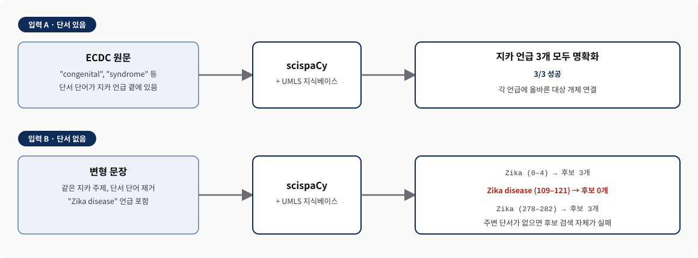
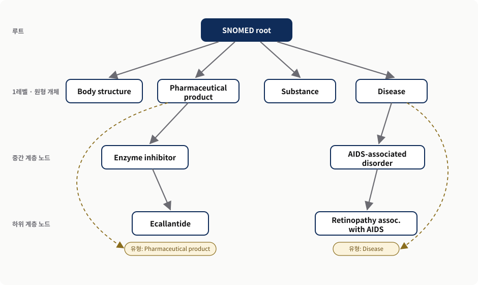
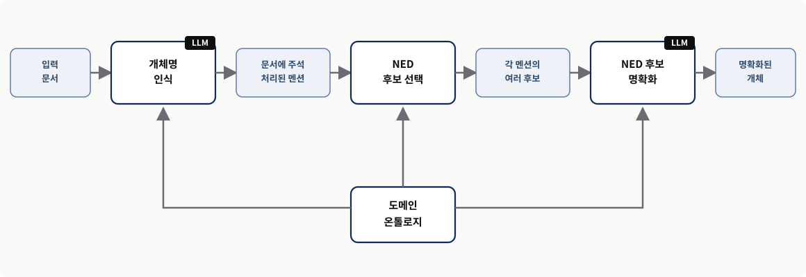
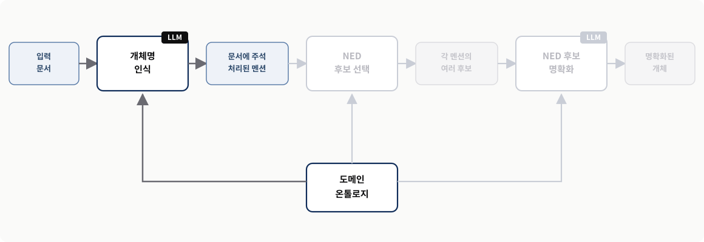
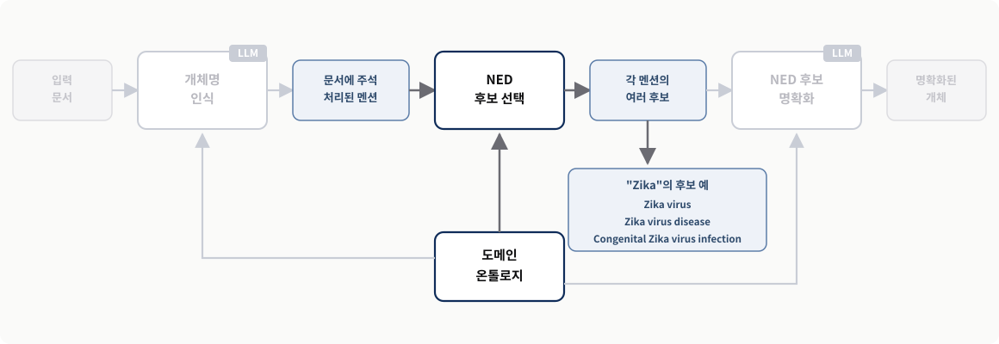
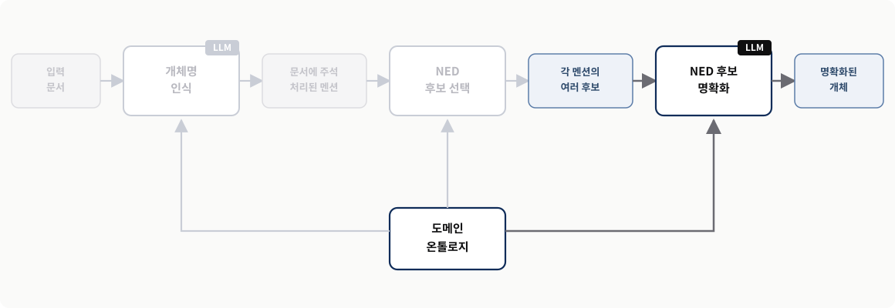
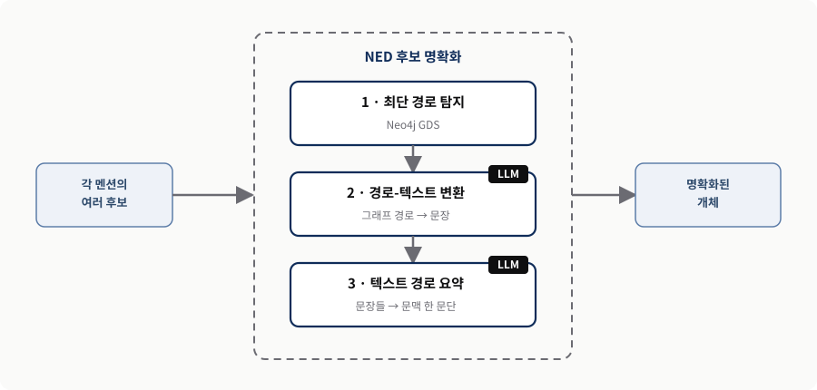
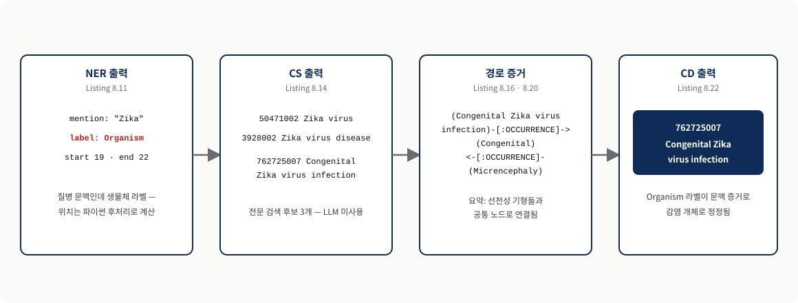

Chapter 8. 오픈 LLM과 도메인 온톨로지를 활용한 개체명 명확화(NED)
scispaCy가 놓친 문장을 SNOMED 온톨로지와 로컬 Llama 3.1 8B의 결합으로 다시 푸는 종단 간 NED 구현
0. 이 장의 질문과 전체 흐름
개체명 명확화(NED, Named Entity Disambiguation)는 문장 속 단어가 실제로 가리키는 대상을 지식베이스의 정확한 항목 하나로 연결하는 작업이다. 7장에서 이 작업을 맡았던 scispaCy — spaCy 프레임워크 위에 만든 생물의학 전용 자연어 처리 도구 — 는 표준 어휘집을 잘 활용하지만, 결정적인 단서 단어가 언급 바로 곁에 없으면 후보조차 찾지 못한다. 이 장은 바로 그 실패 지점에서 출발한다. 범용 대규모 언어 모델(LLM, Large Language Model) — 방대한 텍스트로 학습해 언어를 유창하게 생성하고 해석하는 인공지능 모델 — 을 로컬에 배포하고, 의학 온톨로지 SNOMED를 Neo4j 그래프로 적재한 뒤, 둘을 엮어 종단 간(end-to-end) NED 시스템을 만든다.
두 재료의 역할 분담은 이 장의 모든 단계에서 그대로 반복된다. 7장이 의학 전문 사전으로 단어를 연결하는 방법이었다면, 8장은 사전에 담긴 개념들 사이의 관계까지 동원해 정답을 고르는 방법이다. 일상의 예로 옮기면 이렇다. "Apple"이라는 단어만 보면 과일인지 회사인지 알 수 없지만, 주변에 "아이폰·주가·신제품"이 있고 지식 그래프에 Apple Inc. → PRODUCES → iPhone이라는 관계가 저장돼 있다면 회사라고 판단할 수 있다. 이 비유에서 모호한 "Apple"은 이 장의 "Zika" 같은 언급(mention)에, "아이폰·주가·신제품"은 명확화를 돕는 문맥 단어에, 그래프의 관계는 이 장이 새로 활용하는 온톨로지 속 개체 간 관계와 경로에 대응한다. LLM은 문장을 이해하고 설명하는 일을, 온톨로지는 검증된 후보와 관계를 공급하는 일을 맡는다.
- 한계 진단 — 전통적인 NED 도구가 어떤 상황에서 왜 실패하는지 기록된 출력으로 확인한다.
- 재료 준비 — SNOMED 온톨로지를 Neo4j에 적재하고, Ollama로 Llama 3.1 8B를 로컬에 배포한다.
- 다단계 명확화 — 최단 경로 탐지(shortest-path detection), 경로-텍스트 변환(path-to-text translation), 텍스트 경로 요약(textual path summarization)을 잇는 명확화 과정을 코드로 따라간다.
| 절 | 질문 | 핵심 내용 | 남는 산출물 |
|---|---|---|---|
| §8.1 | scispaCy는 어디서 실패하는가? | 단서 단어가 빠진 문장에서 "Zika disease"의 후보 생성 자체가 실패한다 | 이 장이 풀어야 할 시험 문장 |
| §8.2 | 온톨로지를 어떻게 그래프로 만드는가? | SNOMED 관계·이름·별칭을 적재하고 1레벨 범주를 계층 전체에 전파한다 | 검색·경로 탐색이 가능한 SNOMED 그래프 |
| §8.3 | LLM을 어디서 돌리는가? | Ollama로 Llama 3.1 8B를 로컬에 배포하고 기존 파이썬 코드를 그대로 쓴다 | 결정적 출력을 내는 로컬 모델 클래스 |
| §8.4 | 명확화는 몇 단계로 이루어지는가? | NER로 언급을 찾고, 전문 검색으로 후보를 모으고, 경로 증거로 정답을 고른다 | NER → CS → CD 종단 간 파이프라인 |
| §8.5 | 무엇이 달라졌는가? | scispaCy가 놓친 문장을 관계 문맥으로 풀고, 다른 도메인으로 확장할 토대를 얻는다 | 역할 분담 원칙과 실무 적용 경계 |
- 문제 — 표준 어휘집을 내장한 도구가 있는데도 왜 관계와 경로가 더 필요한가?
- 메커니즘 — NER·후보 선택·후보 명확화 세 단계는 각각 무엇을 입력받아 무엇을 내놓는가?
- 판단 — LLM·온톨로지·일반 코드에 각각 어떤 일을 맡기고 어떤 일을 맡기지 말아야 하는가?
8.1 전통적 NED 시스템의 한계 이해하기 — scispaCy가 놓치는 관계와 경로
- scispaCy는 UMLS 같은 표준 어휘집으로 언급을 표준 개체에 연결하지만, 개체 사이에 이미 존재하는 관계와 경로는 쓰지 못한다.
- 단서 단어가 언급 곁에 있으면 세 언급을 모두 명확화하고, 단서가 빠지면 "Zika disease"의 후보 생성 자체가 실패한다.
- 이 장은 오픈 LLM과 도메인 온톨로지를 결합해 이 한계를 정면으로 다룬다.
scispaCy는 UMLS(Unified Medical Language System, 통합 의학 용어 체계)처럼 표준화된 개체를 담은 어휘집과 온톨로지를 내장한다. 이렇게 표준 개체 목록을 갖추고 있으면 텍스트 속 언급이 실제로 무엇을 가리키는지 정할 수 있어 모호함이 줄어든다. 실무에서 이 연결이 왜 값진지는 표기 통일 문제를 떠올리면 분명해진다. "고혈압", "hypertension", "혈압이 높은 병"처럼 병원과 논문마다 다르게 적힌 표현을 하나의 표준 개념 ID로 묶으면, 여러 기관의 데이터를 같은 기준으로 분석할 수 있다. 여기서 서로 다른 세 표현이 텍스트 속 언급(mention)이고, 이들이 모이는 표준 개념 ID가 UMLS 같은 어휘집에 담긴 표준화된 개체다.
그러나 원서 저자들은 이 접근에 다음 네 가지 한계가 있다고 지적한다.
- 특정 응용 도메인, 곧 생물의학 분야에만 맞춰 설계되어 있다.
- 새로운 개체와 용어를 반영하도록 참조 지식베이스를 확장하고 갱신하기 어렵다.
- 지식베이스에 담긴 방대한 정보를 온전히 활용하지 못한다.
- 개체 사이에 이미 존재하는 관계와 경로를 명확화 작업에 쓰지 못한다.
마지막 항목이 이 장의 출발점이다. 전문 사전을 갖고 있어도 사전 항목들이 서로 어떻게 연결되는지를 활용하지 못하면 판단력이 떨어진다. 예를 들어 "Mercury"는 수성, 수은, 자동차 브랜드를 모두 뜻할 수 있다. 이름 문자열만 비교해서는 셋을 가르기 어렵지만, Mercury → IS_A → Planet, Mercury → ORBITS → Sun이라는 저장된 관계를 보면 수성이라는 판단이 쉬워진다. 이 예에서 "Mercury"는 여러 대상을 가리킬 수 있는 개체 언급에, 수성·수은·자동차 브랜드는 지식베이스 안의 서로 다른 후보 개체에 해당하고, 두 관계 정보가 바로 전통적 NED 시스템이 쓰지 못한다는 "개체 사이에 이미 존재하는 관계와 경로"다.
| 한계 | 실무에서 드러나는 모습 | 이 장의 대응 |
|---|---|---|
| 도메인 고정 | 생물의학 밖 문서에는 그대로 쓸 수 없다 | 풍부한 온톨로지가 있는 도메인이면 같은 구조를 적용할 수 있다는 것이 저자들의 주장이다(§8.5) |
| 지식베이스 갱신의 어려움 | 새 개체·용어가 나와도 참조 사전에 반영하기 어렵다 | 온톨로지 그래프만 갱신하면 새 지식이 후보와 경로에 반영된다(§8.2, §8.4) |
| 정보 활용 부족 | 지식베이스의 방대한 내용 중 이름 대조만 쓴다 | 이름·별칭 전문 검색에 더해 계층·관계 구조까지 쓴다(§8.4.2, §8.4.3) |
| 관계·경로 미활용 | 함께 나온 개체들의 연결 증거를 판단에 못 쓴다 | 후보 사이 최단 경로를 찾아 자연어로 바꾸고 요약해 근거로 쓴다(§8.4.3) |
단서가 있을 때와 없을 때 — 같은 도구, 갈라지는 결과
마지막 한계가 실제로 어떤 결과 차이를 만드는지 보려고, 저자들은 7장 도입부에서 썼던 유럽 질병예방통제센터(ECDC)의 문구를 다시 가져온다.
4월 13일이 있는 주에 벨리즈는 처음으로 모기 매개 지카 바이러스 전파를 보고했습니다. 관찰된 선천성 지카 증후군 및 기타 신경학적 합병증의 증가에 관한 업데이트. 지카 바이러스 감염과 잠재적으로 연관된 소두증 및 기타 태아 기형.
이 입력에서 scispaCy는 "Zika(지카)" 주변의 문맥 단어를 이용해 세 언급을 모두 올바른 개체로 명확화한다. "congenital(선천성)", "syndrome(증후군)" 같은 단서 단어가 언급 바로 곁에 붙어 있어 비교적 쉬운 문제이기 때문이다. "Apple은 달고 아삭하다"라는 문장에서 "달다·아삭하다"만으로 Apple이 회사가 아니라 과일임을 알 수 있는 것과 같은 상황이다. 이 비유의 "달다·아삭하다"가 지카 문구의 "congenital", "syndrome" 같은 강한 문맥 단서에 해당한다.
이번에는 그런 단서 단어를 뺀, 조금 다른 문구로 같은 도구를 시험한다.
지카는 플라비바이러스과(Flaviviridae)에 속하며 이집트숲모기(Aedes)에 의해 전파됩니다. 지카병 및 치쿤구니야열 같은 다른 증후군에 걸린 사람들은 바이러스성 근육통, 감염성 부종, 감염성 결막염 같은 증상을 자주 경험합니다. 지카의 심각한 결과는 임신 중 태반 장벽을 통과하는 능력에서 비롯되며, 이는 소두증과 선천성 기형을 유발합니다.
앞의 문구와 달리 이번에는 명확화를 뒷받침할 단어가 언급 곁에 없다. 플라비바이러스과, 소두증, 선천성 기형 같은 의학적 단서가 있긴 하지만 여러 문장에 흩어져 있다. "그 회사는 새 휴대폰을 공개했다. Apple의 주가가 올랐다"라는 문장에서 Apple 바로 옆에 'company'라는 단어가 없어, 앞 문장의 "회사·휴대폰"과 현재 문장의 "주가"를 함께 봐야 하는 상황과 같다. scispaCy가 이 입력에 내놓은 출력은 다음과 같다.
Recognized entity: Zika 0 4
Ranked target candidates:
- C0276289 Zika Virus Infection
- C0318793 Zika Virus
- C4687930 Zika Virus Antibody Measurement
Recognized entity: Zika disease 109 121
Ranked target candidates:
Recognized entity: Zika 278 282
Ranked target candidates:
- C0276289 Zika Virus Infection
- C0318793 Zika Virus
- C4687930 Zika Virus Antibody Measurement출력을 읽는 방법은 이렇다. Recognized entity는 그 표현을 텍스트에서 찾았다는 뜻이고, 그 아래 Ranked target candidates는 연결할 수 있는 표준 개체 후보의 순위 목록이다. 첫 번째와 세 번째 문장의 "Zika"에는 "C0276289 Zika Virus Infection(지카 바이러스 감염)"을 비롯한 세 후보가 달렸다. 그러나 두 번째 문장의 "Zika disease(지카병)" 언급 아래는 비어 있다. 잘못된 답을 고른 것이 아니라, 검토할 후보 목록 자체를 만들어 내지 못한 것이다. 주변 단서가 사라지는 순간 후보 검색부터 실패한다는 사실이 이 실험의 핵심 관찰이다. 그림 1이 두 입력의 결과 차이를 나란히 보여 준다.

왼쪽 입력 A는 단서 단어가 언급 곁에 있는 원래 ECDC 문구, 오른쪽 입력 B는 단서를 뺀 변형 문구다. 같은 scispaCy + UMLS 조합인데도 B에서는 "Zika disease"의 후보 검색이 실패한다는 차이를 두 열의 결과 칸으로 비교해 읽는다. 원서 §8.1의 두 입력 실험과 기록된 출력을 재구성했다.이 장의 접근 — 오픈 LLM과 온톨로지의 결합
이 장은 오픈 LLM과 도메인 온톨로지를 결합한 새 접근으로 이 한계들을 정면으로 다룬다. 저자들은 이 접근이 scispaCy 같은 도메인 전용 도구와 달리, 풍부한 온톨로지를 갖춘 다른 응용 도메인에도 그대로 적용될 수 있다고 주장한다. 두 재료의 성격은 뚜렷이 다르다. LLM은 언어를 유창하게 다루지만 이따금 검증되지 않은 사실을 만들어 내고, 온톨로지는 검증된 개념과 관계를 정리해 보관한다. 비유하자면 LLM은 설명을 잘하는 의사이고 온톨로지는 표준 의학 교과서와 코드집이다. 의사가 환자 기록의 문맥을 해석하되, 선택할 수 있는 병명과 개념 사이의 관계는 코드집에서 확인하는 구조다. 이 비유에서 의사의 해석력이 LLM의 언어 이해에, 코드집의 목록과 관계가 온톨로지의 검증된 후보와 관계에 대응하며, 두 역할을 잘 엮는 것이 이 장의 핵심 설계다. 다만 비유가 감추는 것도 있다. 실제 시스템에서는 의사(LLM)가 코드집(온톨로지)을 스스로 뒤지는 것이 아니라, 뒤 절에서 보듯 검색과 경로 계산은 데이터베이스가 수행하고 그 결과만 LLM에 건넨다.
8.2 도메인 온톨로지 적재하기 — SNOMED를 Neo4j에 싣기
- SNOMED는 45만 개가 넘는 개념과 풍부한 관계 유형을 담은 다국어 임상 용어 저장소로, 설명 파일과 관계 파일 두 개로 배포된다.
- 적재는 관계 만들기(Listing 8.3) → 이름·별칭 붙이기(Listing 8.4) → 1레벨 범주 라벨 전파(Listing 8.5)의 세 단계로 진행한다.
- 모든 관계는
SNOMED_RELATION으로, 상위-하위 관계만SNOMED_IS_A로 한 번 더 저장해 일반 탐색과 계층 탐색을 구분한다.
명확화 과정을 이끌 지식으로는 7장에서 소개한 SNOMED(Systematized Nomenclature of Medicine, 체계화된 의학 명명법) 온톨로지를 쓴다. SNOMED는 45만 개가 넘는 개념과 풍부한 관계 유형을 담은 다국어 임상 용어 저장소다. 단순한 의학 단어 목록이 아니라 개념과 개념 사이의 관계까지 함께 담긴, 말하자면 의료 지식의 지도다. 예컨대 그래프에는 선천성 지카 감염 → 선천성, 소두증 → 선천성처럼 두 개념이 공통 속성으로 이어지는 정보가 들어갈 수 있고, 이 연결이 뒤의 명확화에서 증거가 된다.
예제 시나리오는 두 개의 배포 파일을 사용한다. sct2_Description_Full-en_US1000124_20220901.txt는 개체의 이름과 별칭을, sct2_Relationship_Full_US1000124_20220901.txt는 개체와 관계를 식별하는 숫자 코드를 담는다. 역할을 나누면 설명 파일은 노드와 관계에 붙일 이름표를, 관계 파일은 노드 사이를 잇는 선을 제공한다. 원서 저자들은 이 파일들의 실제 예시를 7.5.2절에서, 아래 리스팅들의 주석 달린 판본과 상세 설명을 7.6.4절에서 제공하며, 전체 예제 코드는 책의 온라인 저장소에서 받을 수 있다고 안내한다.
그림 2는 SNOMED의 계층 구조와, 그 계층을 따라 정보가 아래로 내려가는 방식을 보여 준다. 이어지는 세 리스팅이 하는 일은 각각 다음과 같다. Listing 8.3은 관계 파일로 Neo4j에 노드와 관계를 만들고, Listing 8.4는 설명 파일에서 이름과 별칭을 뽑아 붙이고, Listing 8.5는 계층을 따라 내려가며 1레벨 노드의 정보를 더 깊은 노드로 전파한다. 지하철망 건설에 빗대면 8.3은 역과 역 사이의 노선을 놓는 일이고, 8.4는 각 역과 노선에 사람이 읽을 이름을 붙이는 일이며, 8.5는 각 역이 어느 권역에 속하는지 상위 분류를 내려보내는 일이다. 비유의 역과 노선이 Neo4j의 노드와 관계에, 역 이름이 개체의 이름·별칭에, 권역 소속이 원형 범주 라벨에 대응한다.

맨 위 루트에서 아래로 내려가며 읽는다. 루트 바로 아래 1레벨 노드(Disease, Pharmaceutical product 등)가 온톨로지의 원형 범주이고, 몇 단계 아래의 세부 개체(예: Retinopathy assoc. with AIDS)는 자기 조상인 1레벨 노드의 이름을 유형(type)으로 물려받는다. 이 유형 전파가 §8.4.1에서 NER의 허용 범주 목록을 만드는 밑바탕이 된다. 원서 그림 8.1의 계층·전파 관계를 재구성했다.Listing 8.3 SNOMED 적재 — 관계 불러오기
관계 파일을 읽어 Neo4j에 노드와 관계를 만드는 임포터다. 먼저 set_constraints가 제약과 인덱스를 건다. SnomedEntity 노드의 id에 거는 유일성 제약은 같은 주민등록번호를 가진 사람을 두 명 등록하지 못하게 막는 규칙에 해당하고, 이름과 관계 속성에 만드는 인덱스는 책 뒤의 찾아보기처럼 검색을 빠르게 한다. 그다음 import_snomed_rels가 배치 단위로 관계를 MERGE하는데, MERGE는 데이터가 없으면 만들고 이미 있으면 기존 것을 재사용하는 명령이다. 특히 관계 유형이 116680003 — "A는 B의 한 종류다"라는 상위·하위(is-a) 관계를 나타내는 SNOMED 코드 — 일 때는 SNOMED_IS_A라는 별도 관계를 추가로 만들어 두며, 이 관계가 뒤의 계층 전파에서 핵심으로 쓰인다.
[...]
class SnomedRelationshipsImporter(BaseImporter):
[...]
def set_constraints(self):
queries = [
(
"CREATE CONSTRAINT IF NOT EXISTS FOR (n:SnomedEntity) "
"REQUIRE n.id IS UNIQUE"
),
(
"CREATE INDEX snomedNodeName IF NOT EXISTS "
"FOR (n:SnomedEntity) ON (n.name)"
),
(
"CREATE INDEX snomedRelationId IF NOT EXISTS "
"FOR ()-[r:SNOMED_RELATION]-() ON (r.id)"
),
(
"CREATE INDEX snomedRelationType IF NOT EXISTS "
"FOR ()-[r:SNOMED_RELATION]-() ON (r.type)"
),
(
"CREATE INDEX snomedRelationUmls IF NOT EXISTS "
"FOR ()-[r:SNOMED_RELATION]-() ON (r.umls)"
),
]
for q in queries:
self.connection.query(q, db=self.db)
def import_snomed_rels(self):
query = """
UNWIND $batch as item
MERGE (e1:SnomedEntity {id: item.sourceId})
MERGE (e2:SnomedEntity {id: item.destinationId})
MERGE (e1)-[:SNOMED_RELATION {id: item.typeId}]->(e2)
FOREACH(ignoreMe IN CASE WHEN item.typeId = '116680003'
THEN [true] ELSE [] END|
MERGE (e1)-[:SNOMED_IS_A]->(e2)
)
"""
size = self.get_csv_size(snomedRels_file)
self.batch_store(snomed_rels_query, self.get_rows(snomedRels_file),
size=size)정리하면 모든 관계는 SNOMED_RELATION으로 저장되고, 그중 상위-하위 관계만 SNOMED_IS_A로 한 번 더 표시된다. 관계를 두 벌로 두는 이유는 탐색의 종류가 둘이기 때문이다. "지카와 소두증이 어떻게 연결되는가?"처럼 모든 관계를 봐야 하는 일반 그래프 탐색에는 SNOMED_RELATION을 쓰고, "소두증이 어느 상위 의료 범주에 속하는가?"처럼 계층만 오르내리는 탐색에는 SNOMED_IS_A만 골라 쓴다. 전체 관계용 도로망과 계층 전용 도로망을 나눠 둔 셈이다.
Listing 8.4 SNOMED 적재 — 이름과 별칭 불러오기
설명 파일에서 개체 이름과 별칭을 읽어 그래프를 채우는 코드로, 쿼리 두 개로 나뉜다. 첫 번째 쿼리(snomed_names_concepts_query)는 숫자로만 저장된 관계 코드에 IS_A, RISK_FACTOR_FOR처럼 사람이 읽을 수 있는 유형 이름과 별칭을 붙이고, 두 번째 쿼리(snomed_names_entities_query)는 개체 노드 자체에 대표 이름과 별칭을 붙인다. 한 개념이 "myocardial infarction(심근경색)"이라는 대표 이름과 "heart attack" 같은 별칭을 함께 갖게 되는 것이 이 단계의 결과다. CASE ... WHEN ... IS NULL 패턴은 값이 아직 비어 있을 때만 새 값을 넣고, 별칭은 목록에 아직 없을 때만 덧붙인다. 주소록에 이미 저장된 별명을 다시 추가하지 않는 것과 같은 중복 방지 장치다.
[...]
class SnomedNamesImporter(BaseImporter):
[...]
def import_snomed_names(self, snomedNames_file):
snomed_names_concepts_query = """
UNWIND $batch as item
MATCH (e1:SnomedEntity)
-[r:SNOMED_RELATION {id: item.conceptId}]->
(e2:SnomedEntity)
WHERE item.conceptId <> '116680003' AND r.id = item.conceptId
SET r.type = CASE
WHEN r.type IS NULL THEN item.termAsType
ELSE r.type END,
r.aliases = CASE
WHEN item.termAsType IN r.aliases THEN r.aliases
ELSE coalesce(r.aliases,[]) + item.termAsType END
"""
snomed_names_entities_query = """
UNWIND $batch as item
MATCH (e:SnomedEntity {id: item.conceptId})
SET e.name = CASE
WHEN e.name IS NULL THEN item.term
ELSE e.name END,
e.aliases = CASE
WHEN item.term in e.aliases THEN e.aliases
ELSE coalesce(e.aliases, []) + item.term END
"""
size = self.get_csv_size(snomedNames_file)
self.batch_store(
snomed_names_concepts_query,
self.get_rows(snomedNames_file),
size=size)
self.batch_store(
snomed_names_entities_query,
self.get_rows(snomedNames_file),
size=size)
[...]이 단계를 마치면 각 개체가 대표 이름과 여러 별칭을 갖는다. 이 이름과 별칭은 §8.4.2의 후보 선택에서 전문 검색(full-text search) 인덱스의 재료가 된다. 문장에 표준 명칭 대신 "heart attack"이 나와도 별칭 덕분에 표준 개념 "myocardial infarction"을 후보로 찾을 수 있게 준비해 두는 것이다.
Listing 8.5 SNOMED 적재 — 1레벨 노드에서 라벨 전파하기
적재의 마지막 단계는 라벨 전파다. 루트 노드(138875005) 바로 아래에 붙은 1레벨 노드들이 온톨로지의 원형 범주(예: Disease, Organism, Procedure)에 해당한다. 이 코드는 각 1레벨 노드에서 출발해 SNOMED_IS_A 관계를 하위 방향으로 끝까지 따라가면서, 그 범주 이름을 아직 갖지 못한 하위 노드에 1레벨 노드의 이름을 라벨로 붙인다. apoc.path.expandConfig에 maxLevel: -1을 주어 깊이 제한 없이 하위 트리 전체를 훑는 것이 핵심이다. 조직도에 빗대면 연구개발본부 → AI연구소 → NLP팀 구조에서 몇 단계 아래의 NLP팀에도 "연구개발본부 소속"이라는 정보가 전달되는 것과 같다. 비유의 최상위 본부가 1레벨 원형 범주에, 몇 단계 아래 팀이 계층 깊은 곳의 세부 개체에 대응한다. 의료 도메인의 예로는, "복부 초음파 검사"처럼 계층 여러 단계 아래에 있는 개념도 이 전파를 거쳐 최상위 Procedure 라벨을 갖게 된다.
[...]
class SnomedLabelPropagator():
[...]
def get_rows(self):
propagation_query = """
MATCH p=(n:SnomedEntity)<-[:SNOMED_IS_A]-(m:SnomedEntity)
WHERE n.id= "138875005" // Root node
WITH distinct m as first_node
CALL apoc.path.expandConfig(first_node, { // #A
relationshipFilter: '<SNOMED_IS_A',
minLevel: 1,
maxLevel: -1,
uniqueness: 'RELATIONSHIP_GLOBAL'
}) yield path
UNWIND nodes(path) as other_level // #B
WITH first_node, collect(DISTINCT other_level) as uniques
UNWIND uniques as unique_other_level
WITH first_node, unique_other_level
WHERE not first_node.name in
coalesce(unique_other_level.type,[])
RETURN unique_other_level.id as id, first_node.name as label // #C
"""
with self._driver.session(database=self._database) as session:
result = session.run(query=propagation_query)
for record in iter(result):
yield dict(record)
[...]주석 표시를 따라 읽으면 세 지점이 보인다. #A에서 1레벨 노드 아래의 모든 경로를 따라 내려가고, #B에서 그 경로에 등장한 노드를 하나씩 펼쳐 모으고, #C에서 "이 노드에는 Disease 라벨을 붙여라"에 해당하는 작업 목록 — 각 하위 노드의 id와 붙일 라벨(1레벨 노드 이름) — 을 반환한다.
이렇게 SNOMED_IS_A 관계를 이용해 의미 유형(semantic type)을 트리 전체에 전파하고 나면, 계층 깊은 곳의 세밀한 개체도 자신이 어느 큰 범주에 속하는지 알게 된다. 이 준비가 있어야 뒤의 NER 단계에서 "이 온톨로지가 인정하는 범주 목록"을 뽑아 쓸 수 있다. 결국 이 절 전체는 LLM이 임의의 분류명을 지어내지 않고 SNOMED에 실제로 존재하는 Disease, Organism, Procedure 같은 범주 안에서만 분류하도록 만드는 기초 공사다.
적재 세 단계의 산출물은 각각 다음 단계의 입력이 된다. 관계(8.3)가 있어야 계층 전파(8.5)가 가능하고, 이름·별칭(8.4)이 있어야 후보 검색(§8.4.2)이 가능하며, 전파된 유형(8.5)이 있어야 NER의 범주 목록(§8.4.1)과 후보 검색의 라벨 필터가 가능하다.
8.3 Ollama와 Llama 3.1 8B로 모델 준비하기 — 로컬에서 돌리는 오픈 LLM
- Ollama는 자기 컴퓨터에서 LLM을 직접 실행하게 해 주는 오픈소스 도구이고, Llama 3.1 8B는 80억 파라미터에 최대 128,000토큰 문맥을 지원하는 오픈소스 모델이다.
- Ollama가 OpenAI Chat Completions API와 호환되므로 앞 장들의 파이썬 코드를 그대로 재사용한다.
temperature=0으로 매번 같은 출력을 얻어, 일관성이 중요한 명확화 작업에 맞춘다.
앞 장들은 OpenAI API로 NLP 작업을 수행했다. 이 장은 그 지식을 확장해 Ollama와 메타가 공개한 Llama 3.1 8B로 NED 시스템을 로컬에 배포한다. Ollama는 사용자가 자기 컴퓨터에서 직접 LLM을 실행하게 해 주는 오픈소스 도구다. 모델을 로컬에서 돌리면 데이터에 대한 통제권을 온전히 쥐면서 지연 시간과 외부 제공자 의존을 함께 줄일 수 있다. Llama 3.1 8B는 80억 개의 파라미터를 가진 오픈소스 LLM으로, 최대 128,000토큰의 문맥 길이를 지원하고 다국어 정보 처리에 최적화되어 있으며 일반 소비자용 하드웨어에서도 무리 없이 돌아가도록 설계됐다.
이 선택이 실무에서 갖는 의미는 분명하다. 의료 기록처럼 민감한 데이터를 외부 서버로 보내지 않고 사내 PC나 서버 안에서 처리할 수 있는 실행 환경이 생기는 것이다. 다만 로컬 실행이 항상 더 빠르다는 뜻은 아니다. 실제 속도와 품질은 GPU, 메모리, 양자화 방식에 따라 달라진다.
Llama 3.1 8B를 로컬에 배포하려면 먼저 Ollama를 내려받아 설치해야 한다. macOS, Linux, Windows와 호환되고 설치 파일은 https://ollama.com/ 에서 받는다. 명령줄과 그래픽 사용자 인터페이스(GUI)를 모두 제공하는데, 원서 저자들은 NED 시스템을 위해 다음 명령줄 두 줄로 모델을 내려받아 배포했다.
Listing 8.6 Llama 3.1 8B를 내려받아 설치하는 Ollama 명령
첫 줄은 Ollama 서버를 띄우고, 둘째 줄은 최신 Llama 3.1 모델을 내려받는다. 식당에 빗대면 ollama serve는 주문을 받을 식당 문을 여는 명령이고, ollama pull llama3.1:latest는 주방에서 쓸 재료를 들여오는 명령이다. 식당이 열려 있어야 손님을 받듯, 서버가 떠 있어야 뒤의 파이썬 코드가 요청을 보낼 수 있다.
ollama serve
ollama pull llama3.1:latestOllama는 OpenAI Chat Completions API와 호환되도록 만들어져 있어, 로컬에 배포한 모델과도 앞 장들에서 쓰던 것과 같은 파이썬 코드로 곧장 대화할 수 있다. 자동차로 치면 엔진은 OpenAI에서 로컬 Llama로 바뀌었지만 운전대와 페달은 그대로인 셈이다. 비유의 엔진이 실제 응답을 만드는 모델에, 운전대와 페달이 프로그램이 사용하는 API 인터페이스에 대응한다. 인터페이스가 같으니 모델을 NED 시스템에 끼워 넣는 일도 그만큼 단순해진다.
Listing 8.7 파이썬에서 Llama 3.1 8B 모델 실행하기
이 클래스는 OpenAI 클라이언트의 base_url을 외부 서버가 아니라 내 컴퓨터의 Ollama 주소(http://localhost:11434/v1)로 돌려놓는다. api_key는 OpenAI Chat Completions API가 형식상 요구할 뿐 오픈 모델에서는 실제로 쓰이지 않으므로 아무 값이나 넣어도 되는 자리표시자다. generate 메서드는 메시지를 받아 응답을 만드는데, temperature=0으로 두어 같은 입력에 매번 같은 결정적 출력을 얻는다. 의료 코드가 실행할 때마다 달라지면 곤란하므로, 명확화처럼 일관성이 중요한 작업에는 창의적인 답보다 일관된 답이 낫다.
from openai import OpenAI
class LLM_Model():
def __init__(self, url='http://localhost:11434/v1', key="default"):
self.client = OpenAI(
base_url=url, # 모델이 서비스되는 기본 URL
api_key=key, # OpenAI Chat Completions API가 요구하지만
# 오픈 모델에서는 사용되지 않는 값
)
def generate(self, messages):
response = self.client.chat.completions.create(
model="llama3.1:latest", # Ollama로 내려받은 llama3.1:latest 지정
messages=messages,
temperature=0,
max_tokens=4000,
top_p=1,
frequency_penalty=0,
presence_penalty=0,
)
#### It assumes as response the ChatGPT API format
return response.choices[0].message.content응답을 response.choices[0].message.content로 꺼내는 마지막 줄은 반환 형식이 ChatGPT API 형식이라는 전제 위에 서 있다. 원본 코드에 남아 있는 #### It assumes as response the ChatGPT API format 주석이 바로 그 뜻이다. 서버가 보내 준 큰 응답 객체에서 실제 모델 답변이 든 상자를 choices[0] → message → content 순서로 열어 꺼낸다고 읽으면 된다.
원서 저자들은 다음 절들의 프롬프트로 생성한 예시 결과를 2024년 10월에 당시 최신 Llama 3.1 모델로 얻었다고 밝힌다. 이 장의 모든 모델 출력은 그 시점의 실행 스냅샷이며, 다른 버전·다른 시점의 실행이 같은 출력을 보장하지는 않는다.
Llama 3.1 같은 범용 모델을 굳이 NED에 쓰는 이유에 대해, 저자들은 LLM이 도메인 전용 온톨로지와 결합될 때 틈새 영역에서도 얼마나 잘 작동할 수 있는지 보여 주려는 시도라고 설명한다. 범용 모델이 의학 코드 전체를 정확히 외우고 있다고 가정하는 것이 아니다. 언어 이해는 LLM이 맡고 전문 지식은 SNOMED가 공급한다. 문서 이해에 능한 신입 분석가에게 회사의 정확한 제품 코드와 부품 관계를 제품 마스터 DB로 쥐여 주는 구조와 같다. 이 비유에서 신입 분석가가 범용 모델 Llama 3.1에, 제품 마스터 DB가 도메인 온톨로지 SNOMED에 대응한다. 다음 절부터 이 과정을 단계별로 분해해, 시스템이 복잡한 생물의학 텍스트에서 개체를 어떻게 해석하고 명확화하는지 따라간다.
8.4 종단 간(End-to-End) NED 과정 — 입력 문서에서 명확화된 개체까지
- NED 과정은 개체명 인식(NER) → 후보 선택(CS) → 후보 명확화(CD) 세 단계로 이어지고, 매 단계가 도메인 온톨로지를 참조한다.
- NER 라벨은 최종 답이 아니라 초기 분류이며, 정확한 표준 개체는 마지막 CD 단계에서 확정된다.
- 후보와 관계를 온톨로지에서 공급해 LLM의 판단 범위를 제한하고, 온톨로지만 갱신하면 새 지식이 반영된다.
그림 3은 입력 문서에서 명확화된 언급까지 이르는 이 예제의 NED 과정을 그린 멘탈 모델이다. 과정은 비정형 텍스트를 담은 입력 문서에서 시작한다. 이 문서를 LLM 기반 개체명 인식(NER, Named Entity Recognition) — 텍스트에서 관심 개체를 찾아 범주를 붙이는 작업 — 구성 요소가 분석한다. 여기서 LLM은 도메인 온톨로지에 담긴 지식을 이용해 입력 텍스트 속 관련 생물의학 개체를 찾아내 라벨을 붙인다. 예컨대 "Zika" 같은 용어가 SNOMED에 따라 Disease(질병) 개념으로 인식될 수 있다. 문장에서 중요한 표현에 밑줄을 긋고 "질병·생물체·시술" 같은 대략적인 종류를 적어 두는 단계라고 생각하면 된다. "Zika가 소두증을 일으킨다"라는 문장이라면 Zika와 소두증을 찾아 구조화된 JSON 항목으로 바꾸는 식이다. 날것의 텍스트가 이 단계에서 구조화된 데이터로 바뀌고, 이후 단계들이 그 데이터를 처리한다.
흐름 전체는 두 축으로 요약된다. 첫째, LLM이 도메인 온톨로지를 이용해 입력 텍스트의 생물의학 개체를 찾아 라벨을 붙인다(예: "Zika" → SNOMED의 "Disease" 개념). 둘째, LLM이 다단계 접근으로 가장 정확한 개체를 고른다. 이 다단계 접근은 온톨로지에서 후보 사이의 최단 경로를 찾고, 찾은 경로를 자연어로 옮겨 요약한 뒤 명확화의 근거로 쓴다. 시험에 빗대면 문제에서 중요한 단어에 밑줄을 긋는 발견과, 참고서의 개념 관계를 조사해 여러 보기 중 정답을 고르는 확정의 두 단계다. 여기서 기억할 점 하나 — NER에서 붙인 라벨은 초기 분류일 뿐이고, 정확한 표준 개체는 뒤의 명확화 단계에서 확정된다.

왼쪽 입력 문서에서 오른쪽 명확화된 개체까지 화살표를 따라 읽는다. 위쪽 세 상자가 NER → 후보 선택 → 후보 명확화의 세 단계이고, 아래의 도메인 온톨로지가 세 단계 모두에 지식을 공급한다는 점이 이 그림의 핵심이다. 원서 그림 8.2의 처리 순서와 온톨로지 참조 관계를 재구성했다.다음 단계는 후보 선택(CS, Candidate Selection)이다. 전문 검색(full-text search) 메커니즘이 각 개체 언급에 대해 가능한 매칭 목록을 만들어 낸다. 예를 들어 "Zika"라는 용어 하나가 SNOMED에서는 Zika Virus(지카 바이러스), Zika Virus Infection(지카 바이러스 감염), Congenital Zika Virus Infection(선천성 지카 바이러스 감염) 같은 여러 개체에 대응할 수 있다. 이 단계는 잠재적 명확화 대상의 후보 풀을 마련할 뿐 정답을 고르지 않는다. 사건의 범인을 확정하기 전에 조건에 맞는 용의자 명단부터 만드는 것과 같다. 비유의 용의자 명단이 전문 검색이 만들어 내는 후보 풀에, 범인 확정이 다음 단계의 후보 명확화에 대응한다.
마지막 후보 명확화(CD, Candidate Disambiguation) 단계에서 LLM은 후보를 추려 언급마다 가장 정밀하게 들어맞는 개체 하나를 결정한다. 다단계 접근이 온톨로지 구조에서 후보 사이의 최단 경로를 찾고 관련 경로의 세부를 자연어로 옮겨 요약함으로써, 문맥 지식을 곁들여 명확화를 뒷받침한다. 이렇게 입력 문서에 언급된 각 개체가 온톨로지 안의 대응 개체로 정확히 매핑되도록 보장한다. 예컨대 Zika, 임신, 소두증, 선천성 기형이 한 문장에 함께 나오고 그래프에서도 서로 짧게 연결된다면 Congenital Zika virus infection을 고르는 식이다. 함께 나온 개체들이 문맥 지식에, 그래프에서 짧게 연결된다는 조건이 최단 경로 탐지에 대응한다.
이 LLM 주도 접근은 명확화 과정의 매 단계에 도메인 전용 온톨로지를 통합한다. 온톨로지의 계층 구조와 관계 구조를 함께 끌어들이면 모델이 개체 분류와 명확화에 대해 더 근거 있는 결정을 내릴 수 있고, 용어가 여러 의미나 연관을 가질 수 있는 복잡한 경우에 특히 효과가 크다. 설계 관점에서 보면 LLM의 기억에서 자유롭게 답을 만들게 하는 대신 범주·후보·관계를 온톨로지에서 공급해 판단 범위를 제한하는 구조이고, 온톨로지만 갱신하면 새 지식이 반영된다는 점도 중요한 장점이다. 표 3이 세 단계의 입력·출력·담당 구성 요소를 정리한다.
| 단계 | 입력 | 출력 | 담당 |
|---|---|---|---|
| 개체명 인식(NER) | 비정형 텍스트 + 온톨로지의 허용 범주 목록 | 언급·라벨·문자 위치가 붙은 JSON | LLM(분류) + 파이썬 함수(위치 계산) |
| 후보 선택(CS) | NER가 표시한 언급들 + 도메인 온톨로지 | 언급별 후보 개체 목록(snomed_id, name) | Neo4j 전문 검색 — LLM을 쓰지 않는다 |
| 후보 명확화(CD) | 원문장 + 후보 목록 + 경로 요약 문맥 | 언급별로 확정된 SNOMED 개체 하나 | Neo4j GDS(경로) + LLM(변환·요약·최종 선택) |
8.4.1 개체명 인식(NER) — 온톨로지가 정의한 범주로 개체 찾기
NER의 목표는 비정형 텍스트에 언급된 개체명을 찾아 Disease(질병), Organism(생물체), Procedure(시술) 같은 미리 정한 범주로 분류하는 것이다. NER와 NED의 질문을 나란히 놓으면 차이가 분명하다. NER는 "문장에 어떤 이름이 있고, 대략 무슨 종류인가?"를 묻고, NED는 "그 이름은 지식베이스의 정확히 어느 항목인가?"를 묻는다. 앞 장들에서 이야기했듯 실용적인 방법 하나는 프롬프트 엔지니어링(prompt engineering), 곧 관심 있는 개체 유형을 프롬프트 안에 명시적으로 정의해 주는 방식이다. 어떤 개체를 정의할지는 데이터 과학자나 데이터 엔지니어가 도메인 전문가와 협의해 정하는 경우가 많다. 의료에서는 Disease·Procedure를 찾지만 제조 문서라면 Product·Part·Defect·Process를 찾도록 범주 자체를 도메인에 맞게 정해야 하기 때문이다.
이 시나리오에서는 SNOMED의 구조화된 의학 지식을 끌어들여, LLM이 생물의학 텍스트에서 더 정밀하고 문맥을 아는 개체 인식을 수행하게 한다. "의학 개체를 알아서 분류하라"고 맡기는 대신 SNOMED가 인정하는 범주와 예시를 제공해 분류 기준을 고정하는 것이다. 그림 4가 NER의 입력과 출력을 보여 준다. NER를 하려면 먼저 온톨로지에서 미리 정의된 범주를 모두 가져와야 하는데, 다음 쿼리가 그 일을 한다.
Listing 8.8 SNOMED에서 미리 정의된 범주 조회하기
이 Cypher 쿼리는 모든 SnomedEntity 노드의 type 속성 — §8.2의 라벨 전파로 채워진 범주 — 을 펼쳐 범주별 등장 횟수를 세고, 빈도 높은 순으로 정렬한 뒤 하나의 리스트로 모아 돌려준다. 이 리스트가 NER 프롬프트에 들어갈 "허용 범주 목록"이 된다. 모델에게 주관식 대신 객관식을 주는 셈이어서, 모델이 새로운 분류명을 마음대로 지어내지 못하고 제공된 보기 안에서만 고르게 된다. 여기서 객관식 보기 목록이 쿼리의 collect가 모아 주는 리스트, 곧 Listing 8.9 프롬프트의 {named_entities} 자리에 들어갈 값이다.
MATCH (n:SnomedEntity)
UNWIND n.type as named_entity
WITH DISTINCT named_entity, count(named_entity) as num_of_entities
ORDER BY num_of_entities DESC
RETURN collect(named_entity) as named_entities이 쿼리 결과를 NER 작업용 프롬프트에 쓴다. §8.4 도입에서 강조한 원칙이 여기서 다시 확인된다. LLM은 도메인 온톨로지를 이용해 입력 텍스트의 생물의학 개체를 찾아 라벨을 붙이고, "Zika" 같은 용어는 SNOMED의 "Disease" 개념으로 인식될 수 있다. 온톨로지의 큰 범주가 NER의 답안 목록이 되는 것이며, §8.2에서 수행한 라벨 전파가 바로 이 목록을 만들기 위한 준비 작업이었다.

전체 흐름 중 강조된 첫 상자에 주목해 읽는다. 입력 문서가 이 단계를 지나면 "주석 처리된 멘션", 곧 언급·라벨·위치가 붙은 구조화 데이터가 된다. 라벨의 보기가 온톨로지의 1레벨 범주에서 나온다는 점이 범용 NER와의 차이다. 원서 그림 8.3의 단계 강조를 재구성했다.Listing 8.9 NER용 단순화 프롬프트
프롬프트는 세 부분으로 이루어진다. system은 의학 도메인의 개체명만, 그것도 주어진 목록({named_entities})에 든 범주만 써서 추출하라고 지시한다. input은 예시 입력 문장이고, assistant는 모델이 내놓아야 할 정답 형식을 JSON으로 보여 주는 퓨샷(few-shot) 예시다. 시험으로 치면 system은 시험 규칙과 허용된 답안 종류, input은 연습 문제, assistant는 모범 답안에 해당한다. "JSON으로 답하라"고 말로만 요구하는 것보다 실제 JSON 예시를 함께 보여 주는 편이 형식 오류를 줄이는 데 유리하며, 원서 저자들은 정답 예시를 미리 보여 주면 모델이 출력 형식을 훨씬 안정적으로 따른다고 설명한다. 전체 프롬프트는 책의 코드 저장소에 있다.
system = """You are an assistant capable of extracting named entities in the
medical domain.
Your task is to extract ALL single mentions of named entities from the text.
You must only use one of the pre-defined entities from the following list:
{named_entities}.
No other entity categories are allowed.
For each sentence, extract the named entities and present the output in
valid JSON format""".format(named_entities=named_entities)
input = """Risk factors for rhinocerebral mucormycosis include poorly
controlled diabetes mellitus and severe immunosuppression."""
assistant = [
{
"sentence": """Risk factors for rhinocerebral mucormycosis include
poorly controlled diabetes mellitus and severe immunosuppression.""",
"entities": [
{
"id": 0,
"mention": "Risk factors",
"label": "Events"
},
{
"id": 1,
"mention": "rhinocerebral mucormycosis",
"label": "Disease"
},
{
"id": 2,
"mention": "poorly controlled diabetes mellitus",
"label": "Disease"
},
{
"id": 3,
"mention": "severe immunosuppression",
"label": "Qualifier value"
}
]
}
]구성 요소를 하나씩 짚으면 다음과 같다.
- 시스템 지시(system instruction) — SNOMED 온톨로지의 의학 도메인 범주에 속하는 개체명 등장만 추출하고, 무관하거나 범위를 벗어난 범주는 피하라고 지시한다.
- 입력 텍스트(input text) — 이 예시의 입력은 비뇌형 모균증(rhinocerebral mucormycosis)이라는 의학적 상태의 위험 요인을 다루며, 당뇨병(diabetes mellitus)과 면역억제(immunosuppression)처럼 인식해야 할 의학 용어를 담고 있다.
- 어시스턴트 출력(assistant output) — 구조화된 JSON으로 응답한다.
sentence필드는 텍스트를 문장 단위로 처리해 의미의 각 단위를 개별적으로 분석하게 하고,entities배열의 각 항목은 문장 안에서 개체를 고유하게 식별하는id, 텍스트에서 찾은 개체명 언급(예: "rhinocerebral mucormycosis"), 그리고 그 개체를 Disease처럼 SNOMED 범주로 분류하는label을 담는다.
다음은 이 NER 프롬프트로 지시받은 LLM에 실제로 전달한 입력 텍스트다. §8.1에서 scispaCy가 놓쳤던 바로 그 지카 문장이다. "Zika"만 보면 바이러스인지 질병인지 모호하지만 임신·태반·소두증·선천성 기형이라는 단서가 함께 있어, 뒤의 NED를 시험하기에 알맞다.
Listing 8.10 NER용 사용자 메시지
user = """Severe outcomes of Zika are due to its capacity to cross the placental barrier during pregnancy, causing microcephaly and congenital malformations"""Listing 8.11 리스팅 8.10 문장에 대한 NER 출력
Llama 3.1이 생성한 결과의 일부다. 세 개체(Zika, microcephaly, congenital malformations)를 찾아 각각 라벨과 문자 위치를 붙였다. "Zika"가 Organism(생물체)으로 분류된 점을 눈여겨봐야 한다. 이 초기 라벨이 명확화 과정에서 어떻게 다듬어지는지 §8.4.3에서 보게 된다.
{
"sentence": "Severe outcomes of Zika are due to its capacity to cross the placental barrier during pregnancy, causing microcephaly and congenital malformations.",
"entities": [
{
"id": 0,
"mention": "Zika",
"label": "Organism",
"start": 19,
"end": 22
},
{
"id": 1,
"mention": "microcephaly",
"label": "Clinical finding (finding)",
"start": 105,
"end": 116
},
{
"id": 2,
"mention": "congenital malformations",
"label": "Clinical finding (finding)",
"start": 122,
"end": 145
}
]
}이 결과에서 세 개체를 읽어 낼 수 있다.
- "Zika" — Organism(생물체)으로 식별됐고, 문장 안 위치는 19번째 문자에서 22번째 문자까지다.
- "Microcephaly(소두증)" — Clinical finding (finding), 곧 임상 소견으로 라벨링되어 의학적 상태임을 나타낸다. 105~116번째 문자에 있다.
- "Congenital malformations(선천성 기형)" — 역시 Clinical finding (finding)으로 라벨링됐고, 122~145번째 문자 사이에 있다.
Zika → Organism이 정답처럼 보이지 않아도 걱정할 단계는 아니다. 이 라벨은 최종 답이 아니라 후보 검색을 돕는 초기 분류다. "Jaguar"라는 단어를 일단 동물·브랜드와 관련된 이름으로 잡아 둔 뒤 엔진·신차·변속기 같은 문맥을 보고 자동차 브랜드로 확정하는 과정과 같다. 비유에서 처음의 느슨한 분류가 NER의 Organism 라벨에, 문맥 단어들이 함께 등장한 microcephaly·congenital malformations에, 최종 확정이 뒤의 명확화 단계에 대응한다.
한 가지 약점이 남는다. LLM은 문장 속 언급의 시작·끝 문자 위치를 정확히 세는 일에 서툴다. 말은 유창하게 하지만 몇 번째 글자인지 세는 일은 못 미더운 셈이다. 그래서 위 출력의 start와 end 필드는 LLM이 아니라 다음 파이썬 함수로 후처리해 채웠다. 의미 판단은 LLM에 맡기고 정확해야 하는 계산은 일반 코드에 맡기는, LLM 시스템에서 자주 쓰는 하이브리드 설계다.
Listing 8.12 언급의 시작·끝 문자 위치를 계산하는 파이썬 함수
문자열(string) 안에서 부분 문자열(substring)이 나타나는 모든 위치를 찾아, 등장마다 시작·끝 인덱스 튜플을 모아 돌려준다. find로 다음 등장을 찾고, 못 찾으면(-1) 반복을 끝내며, 찾을 때마다 검색 시작점을 언급 길이만큼 앞으로 밀어 다음 등장을 이어서 찾는다.
def find_all_mention_indices(self, string, substring):
indices = []
start_index = 0
while True:
start_index = string.find(substring, start_index)
if start_index == -1:
break # No more occurrences found
end_index = start_index + len(substring) - 1
indices.append((start_index, end_index))
#### Move start_index forward to search for the next occurrence
start_index += len(substring)
return indices중간의 #### Move start_index forward to search for the next occurrence 주석은 방금 찾은 언급 다음 지점부터 다시 검색하도록 시작 인덱스를 전진시킨다는 뜻이다. 문장이 Zika and Zika disease라면 첫 번째 Zika를 찾은 뒤 검색 위치를 앞으로 옮겨 두 번째 Zika도 찾는다. 이때 end_index는 start_index + len(substring) - 1로 계산되므로 마지막 문자를 포함하는 인덱스다. 이 함수가 전통적 NER 시스템이 제공하던 "언급의 위치" 정보를 채워 넣는다.
8.4.2 후보 선택(CS) — 온톨로지에서 가능한 후보 길어 올리기
NED 과정의 두 번째 단계인 후보 선택(CS)은 각 개체명이 의도했을 수 있는 의미와 일치하는 관련 개체나 개념을 찾아낸다. 최종 답을 바로 고르는 것이 아니라 가능한 정답 후보를 빠짐없이 수집하는 단계다. "Java"의 후보로 프로그래밍 언어, 인도네시아 섬, 커피를 모두 가져온 뒤 다음 단계에서 문맥으로 하나를 고르는 것과 같은 구도이며, 그림 5가 이 단계의 입력과 출력을 보여 준다.

강조된 두 번째 상자와 그 아래의 후보 예시 상자를 함께 읽는다. "Zika" 한 언급에 세 후보가 나란히 달린다는 것, 그리고 이 단계의 출력이 정답 하나가 아니라 후보 목록이라는 것이 핵심이다. 원서 그림 8.4의 단계 강조와 후보 예시를 재구성했다.다음 코드에서 보듯 CS의 입력은 NER 과정이 입력 텍스트에 표시한 언급들과 도메인 온톨로지이고, 출력은 각 언급에 연관된 하나 이상의 후보 개체 목록이다.
이 단계에서는 LLM을 쓰지 않는다. 이유는 두 가지다. 첫째, LLM 안에 박제된 지식에 기대기보다 도메인 온톨로지에서 후보를 직접 조회하고 싶기 때문이다. 유창하지만 이따금 사실을 지어내는 모델의 기억보다, 검증된 사실이 정리된 장부를 믿는 선택이다. 둘째, 온톨로지가 너무 커서 그 전체를 프롬프트에 통째로 실을 수 없기 때문이다. 그래서 후보 조회는 Neo4j의 전문 검색 기능으로 처리한다. 이 기능은 각 언급과 가깝게 일치하는 온톨로지 안의 문자열을 찾아 준다. 직원 45만 명 중 동명이인을 찾으면서 LLM에게 전 직원 명단을 읽히는 대신 인사 데이터베이스에서 검색하는 것과 같다. 비유의 직원 45만 명이 45만 개가 넘는 개념을 담아 프롬프트에 실을 수 없는 SNOMED에, 인사 DB 검색이 Neo4j 전문 검색에 대응한다.
class CandidateSelection:
[...]
def full_text_query(self):
query = """
CALL db.index.fulltext.queryNodes("names", $fulltextQuery,
{limit: $limit})
YIELD node
WHERE node:SnomedEntity AND ANY(x IN node.type
WHERE x IN $labels)
RETURN distinct node.name AS candidate_name, node.id
AS candidate_id
"""
return query
def generate_full_text_query(self, input):
full_text_query = ""
words = [el for el in input.split() if el]
if len(words) > 1:
for word in words[:-1]:
full_text_query += f" {word}~0.80 AND "
full_text_query += f" {words[-1]}~0.80"
else:
full_text_query = words[0] + "~0.80"
return full_text_query.strip()
[...]쿼리의 $labels 매개변수가 탐색 공간을 줄인다. 이 라벨들은 NER 단계의 출력에서 모은 것으로, 언급된 개체 유형과 관련 있는 개체의 부분집합만 찾도록 검색을 좁힌다. 예컨대 cold의 라벨이 Disease라면 "감기" 쪽에서 찾고 Temperature라면 "낮은 온도" 쪽에서 찾게 되는 것이다. 또 generate_full_text_query가 각 단어 뒤에 붙이는 ~0.80은 퍼지 매칭(fuzzy matching)을 뜻한다. 철자가 조금 다르거나 변형된 형태라도 유사도 0.80 이상이면 후보로 잡는다. 이 기준에는 양쪽으로 경계가 있다 — 너무 낮추면 무관한 후보가 늘고, 너무 높이면 오탈자나 변형 표현을 놓친다.
전문 검색은 실용적인 해법이지만, 벡터 기반 검색을 함께 쓰면 문자 매칭으로는 잡히지 않는 추가 후보까지 끌어와 성능을 더 높일 수 있다. heart attack과 myocardial infarction처럼 글자 모양은 거의 다르지만 뜻이 같은 짝 — §8.2의 Listing 8.4가 한 개념에 함께 저장해 둔 대표 이름과 별칭 — 이 그 예다. 전문 검색은 철자 유사성에 강하고, 벡터 검색은 이런 의미 유사성에 강하다.
"Zika"를 입력 용어로 넘기면 쿼리는 다음과 같은 JSON을 돌려준다.
Listing 8.14 CS 단계에서 갱신된 NED 결과 예시
앞의 NER 결과에 candidates 필드가 새로 붙었다. "Zika" 하나에 세 개의 SNOMED 후보가 달렸고, 이 시점에는 셋 다 이름만 보면 그럴듯하다. 아직 아무것도 확정하지 않았다는 점이 중요하다.
{
"id": 0,
"mention": "Zika",
"label": "Organism",
"start": 19,
"end": 22,
"candidates": [
{
"snomed_id": "50471002",
"name": "Zika virus"
},
{
"snomed_id": "3928002",
"name": "Zika virus disease"
},
{
"snomed_id": "762725007",
"name": "Congenital Zika virus infection"
}
]
}candidates 필드에는 시스템이 각 언급에 대해 찾아낸 잠재적 매칭, 곧 후보 목록이 담긴다. 각 후보는 SNOMED를 근거로 한 그 언급의 가능한 해석 하나이며, 두 필드로 식별된다.
- snomed_id — SNOMED에서 그 개념의 고유 식별자
- name — 해당
snomed_id에 연결된 의학 개체의 이름
이 경우 후보는 "Zika virus(지카 바이러스, 50471002)", "Zika virus disease(지카 바이러스병, 3928002)", "Congenital Zika virus infection(선천성 지카 바이러스 감염, 762725007)"이다. 임상 용어에서 "Zika"가 가질 수 있는 의학적 의미들이 이렇게 후보 풀에 모였고, 다음 명확화 단계에서 더 정교하게 걸러질 준비를 마쳤다. 다음 단계의 관건은 소두증·선천성 기형 쪽 후보들이 이 세 Zika 후보 중 누구와 더 의미 있게 연결되는지를 비교하는 것이다.
8.4.3 후보 명확화(CD) — 함께 나온 개체를 단서로 정답 고르기
NED 과정의 마지막 단계는 후보 명확화(CD)다(그림 6 참고). 전략의 핵심은 대상 개체와 한 문장에 함께 등장한 다른 의학 개체들이 제공하는 문맥 정보를 활용하는 것이다. 이 동반 개체들을 도메인 온톨로지의 구조화된 지식과 맞대어 보면서 선택된 후보를 검증하고 추려, 가장 정확한 짝을 결정한다. 대상 단어만 보지 않고 같은 문장의 다른 개체를 증인처럼 세우는 방식이다. "Java"와 JVM·Spring·코드가 함께 나오면 섬이나 커피가 아니라 프로그래밍 언어라고 판단할 수 있는 것과 같은데, 이 비유의 "Java"가 명확화 대상 언급(이 장의 "Zika")에, JVM·Spring·코드가 동반 등장한 의학 개체들의 문맥 정보에 대응한다.
"Zika"와 "microcephaly(소두증)"를 함께 언급하는 문장을 생각해 보자. "Zika" 곁에 "microcephaly"가 있다는 사실 자체가 값진 문맥이다. 선천성 지카 바이러스 감염이 소두증을 일으킨다고 알려져 있으므로, 이 동반 등장은 Congenital Zika virus infection(선천성 지카 바이러스 감염)과의 연관을 시사한다. 명확화 과정은 이 동시 출현을 근거로, "Zika"의 다른 가능한 의미(일반적인 바이러스나 무관한 용어)보다 선천성 지카 바이러스 감염을 우선하도록 만들 수 있다. "임신·태반·소두증·선천성 기형"이라는 단서 묶음은 바이러스 그 자체보다 태아의 선천성 감염 개념을 강하게 가리킨다.
정리하면 LLM은 다단계 접근으로 가장 정확한 개체를 고른다. 도메인 온톨로지에서 후보 사이의 최단 경로를 찾고, 그 경로 정보를 자연어로 옮기고 요약해 명확화의 근거로 삼는 방식이다.

강조된 세 번째 상자를 중심으로, 왼쪽에서 들어오는 "각 멘션의 여러 후보"가 오른쪽의 "명확화된 개체" 하나로 좁혀지는 방향을 따라 읽는다. 그래프 알고리즘과 LLM이 이 상자 안에서 함께 일한다는 점이 앞 두 단계와 다르다. 원서 그림 8.5의 단계 강조를 재구성했다.입력 문서에서 식별된 각 언급에 대해 명확화된 개체를 만들어 내는 과정은 세 단계로 나뉜다.
- 최단 경로 탐지(detecting shortest paths) — 한 문장 안의 서로 다른 언급들에 연관된 후보 개체 사이에서 길이가 가장 짧은 경로를 찾는다. 이 연결들을 지도처럼 그려 보면, 각 언급이 의도한 의미를 밝히는 데 도움이 되는 잠재적 관계가 드러난다.
- 경로-텍스트 변환(translating paths to text) — LLM이 텍스트 처리에 강하다는 점을 활용하기 위해, 후보 개체를 잇는 각 그래프 경로를 자연어 문장으로 옮긴다. 이 변환 덕분에 LLM은 관계 정보를 자신이 잘 다루는 형식으로 해석할 수 있다.
- 텍스트 경로 요약(summarizing textual paths) — 변환된 경로에서 나온 모든 텍스트 정보를 하나의 종합적인 설명으로 요약한다. 이 요약이 관계의 핵심을 잡아내, LLM이 더 정확한 명확화 결정을 내리도록 돕는다.
여행에 빗대면 첫 단계는 지도에서 후보와 단서 사이의 가까운 길을 찾는 일이고, 두 번째는 지하철 노선도를 "A역에서 B역을 거쳐 C역으로 간다"라는 문장으로 바꾸는 일이며, 세 번째는 여러 길 안내 중 최종 판단에 필요한 핵심 연결만 남기는 일이다. 그림 7이 이 단계들을 개괄한다. LLM은 경로-텍스트 변환과 텍스트 경로 요약 두 단계에 투입되어 관계 정보를 해석하고 압축하며, 곧이어 다룰 최단 경로 탐지는 Neo4j의 그래프 데이터 사이언스(GDS, Graph Data Science) 라이브러리로 후보 사이의 연결을 찾는다.
1단계에서 한 문장 안에서 식별된 후보들 사이의 최단 경로를 탐지하면, 예컨대 다음과 같은 경로가 나온다.
(Congenital Zika virus infection)-[:OCCURRENCE]->
(Congenital)<-[:OCCURRENCE]-(Micrencephaly)원서 본문은 여기서 (Congenital)<-[:OCCURRENCE]-(Micrencephaly) 부분이 "Zika virus disease"와 "Chikungunya fever" 사이의 경로를 나타낸다고 설명한다. 그러나 표시된 경로의 노드는 Congenital Zika virus infection, Congenital, Micrencephaly 세 개다. 통합 해설판의 검토 메모는 이 서술을 다른 예시가 섞인 편집 오류로 보고, 이 경로를 선천성 지카 감염과 소두증이 Congenital이라는 공통 속성으로 연결된다는 뜻으로 읽는 편이 자연스럽다고 판단한다.

왼쪽의 "각 멘션의 여러 후보"에서 오른쪽의 "명확화된 개체"까지 세 상자를 순서대로 읽는다. 1단계만 그래프 알고리즘(Neo4j GDS)이 맡고 2·3단계는 LLM이 맡는다는 담당 표시가 이 그림의 요점이다. 원서 그림 8.6의 단계 구분을 재구성했다.최단 경로 탐지 — 허브 노드를 걷어 내고 의미 있는 연결만 남기기
이 단계의 목표는 CS 단계에서 식별된 각 의학 개체 언급에 연관된 모든 가능한 후보 사이의 최단 경로를 탐지하는 것이다. 다음 리스팅이 이 작업을 수행하는 쿼리를 보여 준다.
Listing 8.15 SNOMED 온톨로지에서 관련 경로를 추출하는 파이썬 클래스
쿼리의 흐름을 미리 그려 두면 읽기 쉽다. 먼저 gds.degree.stream으로 연결 수(차수)가 가장 높은 노드 350개를 "허브 노드"로 모은다. "사물·질병·사람"처럼 거의 모든 것과 연결된 지나치게 넓은 개념을 경유하면 모든 후보가 서로 가까워 보여 구별력이 사라지므로, 이 허브 노드들은 뒤에서 제외한다. 그다음 두 개체 s1, s2 사이의 모든 최단 경로를 1~2홉 이내에서 찾는다. 경로가 길어질수록 우연한 연결과 계산량이 함께 늘기 때문에, 직접 연결이거나 중간 노드 하나를 거치는 경로까지만 본다. 마지막으로 허브 노드가 낀 경로를 걸러 낸 뒤, 남은 경로를 (n1)-[:REL_TYPE]->(n2)처럼 방향과 관계 유형이 드러나는 읽기 쉬운 문자열로 바꾼다. (고혈압)-[:RISK_FACTOR_FOR]->(심혈관질환) 같은 표기가 그 결과다.
class PathExtraction():
def __init__(self, model, store, candidates, named_entities):
self.model = model
self.store = store
self.candidates = candidates
self.named_entities = named_entities
[...]
def get_co_occs_query(self, s1_id, s2_id):
query = f"""
CALL gds.degree.stream('snomedGraph')
YIELD nodeId, score
WITH gds.util.asNode(nodeId).name AS name, score AS degree
ORDER BY degree DESC
LIMIT 350
WITH collect(name) as hub_nodes
MATCH (s1), (s2)
WHERE s1.id="{s1_id}" AND
s2.id="{s2_id}"
WITH s1,
s2,
allShortestPaths((s1)-[:SNOMED_RELATION*1..2]-(s2)) AS paths,
hub_nodes
UNWIND paths AS path
WITH relationships(path) AS path_edges, nodes(path) as path_nodes,
hub_nodes
WITH [n IN path_nodes | n.name] AS node_names,
[r IN path_edges | r.type] AS rel_types,
[n IN path_edges | startnode(n).name] AS rel_starts,
hub_nodes
WHERE not any(x IN node_names WHERE x IN hub_nodes)
WITH [i in range(0, size(node_names)-1) | CASE
WHEN i = size(node_names)-1
THEN "(" + node_names[size(node_names)-1] + ")"
WHEN node_names[i] = rel_starts[i]
THEN "(" + node_names[i] + ")" + '-[:' + rel_types[i] + ']->'
ELSE "(" + node_names[i] + ")" + '<-[:' + rel_types[i] + ']-' END]
as string_paths
RETURN DISTINCT apoc.text.join(string_paths, '') AS `Extracted paths`
""".format(s1_id=s1_id, s2_id=s2_id, named_entities=named_entities)
return query
[...]이 쿼리의 결정적인 단계는 셋이다.
- 차수 계산(degree calculation) —
CALL gds.degree.stream으로 그래프에서 차수(연결 수)가 가장 높은 노드들을 조회한다. 지나치게 많이 연결된 허브 노드들이며, 나중에 제외되어 더 의미 있고 덜 일반적인 연결에 집중하게 한다. - 최단 경로 탐색(shortest-path search) — ID로 지정한 두 개체
s1,s2사이의 모든 최단 경로를 찾되, 경로 길이를 1~2홉(관계)으로 제한한다. 이 관계들에서 허브 노드를 걸러 내어 일반적이거나 지나치게 넓은 연결을 피한다. - 경로 변환(path transformation) — 찾은 경로를 펼쳐 관여한 노드와 관계를 모두 모은 뒤, 관계의 방향과 유형이 보이는 읽기 쉬운 문자열(예:
(n1)-[:REL_TYPE]->(n2))로 형식화한다.
마지막 변환이 단순한 겉치레가 아니라는 점에 주의해야 한다. 그래프에서 두 노드가 가깝다는 사실만 남기면 A ASSOCIATED_WITH B(연관된다)와 A CAUSES B(일으킨다)의 구별이 사라진다. 전혀 다른 의미이기 때문에, 쿼리는 관계 유형(rel_types)과 시작 노드(rel_starts)를 함께 모아 어떤 관계로 어느 방향으로 연결됐는지를 문자열에 새겨 둔다.
Listing 8.16 Neo4j GDS 라이브러리로 탐지한 경로들
각 항목이 id와 path를 담은 결과다. 여러 경로가 "Congenital Zika virus infection(선천성 지카 바이러스 감염)"에서 출발해 여러 선천성 상태로 이어진다.
{
"id": 1,
"path": "(Congenital Zika virus infection)-[:OCCURRENCE]->(Congenital)
<-[:OCCURRENCE]-(Micrencephaly)"
},
{
"id": 2,
"path": "(Congenital Zika virus infection)-[:OCCURRENCE]->(Congenital)
<-[:OCCURRENCE]-(Acrocephaly)"
},
{
"id": 3,
"path": "(Congenital Zika virus infection)-[:OCCURRENCE]->(Congenital)
<-[:OCCURRENCE]-(Multiple congenital malformations)"
},
{
"id": 4,
"path": "(Congenital Zika virus infection)-[:OCCURRENCE]->(Congenital)
<-[:OCCURRENCE]-(Congenital malformation)"
},
{
"id": 5,
"path": "(Congenital Zika virus infection)-[:OCCURRENCE]->(Congenital)
<-[:OCCURRENCE]-([X]Other congenital malformations)"
},
{
"id": 6,
"path": "(Micrencephaly)-[:OCCURRENCE]->(Congenital)
<-[:OCCURRENCE]-(Multiple congenital malformations)"
},
{
"id": 7,
"path": "(Micrencephaly)-[:OCCURRENCE]->(Congenital)
<-[:OCCURRENCE]-(Congenital malformation)"
},
{
"id": 8,
"path": "(Micrencephaly)-[:OCCURRENCE]->(Congenital)
<-[:OCCURRENCE]-([X]Other congenital malformations)"
},
{
"id": 9,
"path": "(Acrocephaly)-[:OCCURRENCE]->(Congenital)
<-[:OCCURRENCE]-(Multiple congenital malformations)"
},
{
"id": 10,
"path": "(Acrocephaly)-[:IS_A]->(Craniosynostosis syndrome)
-[:IS_A]->(Congenital malformation)"
},
{
"id": 11,
"path": "(Acrocephaly)-[:PATHOLOGICAL_PROCESS_(ATTRIBUTE)]
->(Pathological developmental process)
<-[:PATHOLOGICAL_PROCESS_(ATTRIBUTE)]-(Congenital malformation)"
},
{
"id": 12,
"path": "(Acrocephaly)-[:OCCURRENCE]->(Congenital)
<-[:OCCURRENCE]-(Congenital malformation)"
},
{
"id": 13,
"path": "(Acrocephaly)-[:OCCURRENCE]->(Congenital)
<-[:OCCURRENCE]-([X]Other congenital malformations)"
}
]이 JSON 출력에서 각 항목은 ID와 경로를 담고, 각 경로는 온톨로지 안의 동시 출현을 근거로 생물의학 개체 사이의 관계적 연결을 보여 준다. 읽는 데 필요한 관계 유형은 셋이다. OCCURRENCE는 발생 속성의 공유를, IS_A는 상위·하위 분류를, PATHOLOGICAL_PROCESS는 병리 과정 속성의 공유를 나타낸다. 후보 조합마다 여러 경로가 나올 수 있어 목록이 이렇게 길어지는데, 이 긴 목록을 그대로 최종 LLM에 넣지 않고 다음 단계에서 문장으로 바꾸고 요약한다. 내용은 세 갈래로 정리된다.
- 선천성 지카 바이러스 감염 경로들 — 많은 경로가 선천성 지카 바이러스 감염에서 시작해
[:OCCURRENCE]관계를 통해 소두증(Micrencephaly), 첨두증(Acrocephaly), 다발성 선천 기형(Multiple congenital malformations) 같은 여러 선천성 상태로 이어진다. 선천성 지카 바이러스 감염이 이 상태들과 — 원인이나 발생으로서 — 연관됨을 시사한다. - 공유되는 선천성 상태 — Congenital(선천성)은 소두증, 첨두증 같은 여러 선천성 상태를 잇는 공통 노드다. 이 중심 노드는 이 상태들이 비슷한 발생 속성을 공유함을 나타낸다.
- 대안적 관계들 — 일부 경로는
[:IS_A]나[:PATHOLOGICAL_PROCESS_(ATTRIBUTE)]같은 관계로 계층적·속성 기반 연결을 보여 준다. 예컨대 첨두증은 두개골 조기유합 증후군(Craniosynostosis syndrome) 아래로 분류되고, 이는 다시 선천성 기형(Congenital malformation)과 이어진다.
경로를 텍스트로 변환하기 — 그래프를 LLM이 잘 다루는 언어로 옮기기
이 단계는 그래프 경로를 문장으로 옮겨, LLM이 복잡한 관계 데이터를 자신에게 가장 잘 맞는 형식인 자연어로 처리할 수 있게 한다. 이렇게 바꿔 주면 모델이 개체 사이의 연결을 해석하기 쉬워지고, 비슷한 용어를 구별하는 데 필요한 문맥도 생긴다. LLM은 (A)-[:REL]->(B) 같은 그래프 기호보다 "A는 B와 이런 관계가 있다"라는 문장을 더 안정적으로 해석하므로, 그래프 알고리즘의 결과를 LLM에게 익숙한 언어로 번역해 주는 것이다. 다음은 경로를 문장으로 옮기는 프롬프트의 단순화 버전이다.
Listing 8.17 경로를 문장으로 옮기는 프롬프트의 단순화 버전
system 지시는 Neo4j 그래프 경로를 명확한 문장으로 옮기되, 경로에 나온 정확한 개체 이름을 그대로 쓰라고 요구한다. 변환 과정에서 개체 이름을 비슷한 표현으로 바꿔 버리면 나중에 원래 후보 ID와 다시 연결하기 어려워질 수 있어서, 문장은 자연스럽게 만들되 후보 이름만은 정확히 보존하게 하는 것이다. assistant 예시는 고혈압-심혈관질환-심근경색 경로가 자연스러운 설명 문장으로 풀리는 모습을 보여 준다.
system = """You are an assistant capable of translating a Neo4j graph path
into a clear sentence.
Use the exact entity names from the path while generating the sentence.
The sentences will assist a large language model (LLM) in disambiguating
biomedical entities.
Ensure the output is a valid JSON with no extraneous characters."""
input = {
"path": "
(Hypertension)-[:RISK_FACTOR_FOR]->(Cardiovascular Disease)
<-[:ASSOCIATED_WITH]-(Myocardial Infarction)"
}
assistant = {
"sentence": "Hypertension is a risk factor for cardiovascular
disease. Myocardial infarction is also associated with cardiovascular
disease, indicating that hypertension may increase the risk of
experiencing a myocardial infarction through its connection to
cardiovascular disease."
}프롬프트의 구성은 이렇다. 시스템 지시는 Neo4j 그래프 경로를 명확하고 사람이 읽기 쉬운 문장으로 옮기게 하고, 입력은 복잡한 관계를 담을 수 있는 Neo4j 데이터베이스의 그래프 경로이며, 어시스턴트 출력은 생성된 문장을 담은 유효한 JSON 구조다. 예시를 그대로 읽으면 그래프 고혈압 → 심혈관질환 ← 심근경색이 "고혈압은 심혈관질환의 위험 요인이며 심근경색도 심혈관질환과 관련된다"라는 문장으로 바뀐 것이다. 결과를 JSON으로 감싸는 이유는 다음 프로그램이 출력을 안정적으로 읽게 하기 위해서다.
각 그래프 경로는 이렇게 하나의 명확한 문장으로 옮겨진다. 결과는 다음 리스팅에 있다.
Listing 8.18 경로를 자연어로 변환한 결과
Listing 8.16의 경로들이 각각 한 문장으로 풀려 나왔다. 그래프의 화살표가 "~와 연관된다", "~에서 발생한다" 같은 자연어 서술로 바뀌었다. 문장이 다소 어색해도 문제되지 않는다 — 목적은 매끄러운 글이 아니라, 정확한 개체명과 관계를 잃지 않고 LLM에 전달하는 것이다.
[{
"sentence": "A Congenital Zika virus infection occurrence is associated
with a Congenital occurrence, which in turn is associated with
Micrencephaly."
},
{
"sentence": "A Congenital Zika virus infection occurrence is associated
with a Congenital occurrence, which in turn is associated with an
Acrocephaly occurrence."
},
[...],
{
"sentence": "Micrencephaly occurs in Congenital and Multiple congenital
malformations also occur in Congenital."
},
{
"sentence": "Micrencephaly occurs in Congenital and is also an occurrence
of Congenital malformation."
},
[...],
{
"sentence": "Acrocephaly occurs in Congenital and Other congenital
malformations also occur in Congenital."
}]이 JSON 항목들 덕분에 그래프 경로가 LLM이 해석하고 명확화에 활용할 수 있는 형태가 됐다.
텍스트 경로 요약하기 — 모델의 인지 부하를 낮추기
선택된 후보들의 최종 명확화를 실행하기 전에, 변환된 그래프 경로를 나타내는 문장들을 요약해야 한다. 요약을 거치면 모델이 읽어야 할 분량 — 원서 저자들이 모델의 "인지 부하"(토큰 수)라고 부르는 것 — 이 줄어들어, 모델이 과도한 세부에 파묻히지 않고 개체 관계를 해석해 가장 정확한 후보를 고르기 쉬워진다. 회의록 20페이지를 통째로 건네는 대신 의사결정에 필요한 1페이지 요약을 주는 것과 같다. 비유의 회의록이 경로마다 하나씩 만들어진 Listing 8.18의 변환 문장들에, 1페이지 요약이 이 단계가 만드는 하나의 종합 문맥에 대응하고, 중복 문장이 줄어들며 비용과 처리 시간이 함께 줄어드는 것이 인지 부하 감소의 실체다.
다만 목표는 무조건 짧게 줄이는 것이 아니다. 최종 후보를 구별하는 데 필요한 개체명·관계 유형·관계 방향은 요약에 남아야 한다. 지나치게 압축하면 결정의 근거 자체가 사라질 수 있다. 다음 리스팅이 요약 프롬프트의 단순화 버전이다. 여러 문장을 한 문단으로 압축하는 것이 핵심으로, system 지시는 온톨로지 경로에서 나온 문장들을 짧은 요약으로 압축하되 그 요약이 개체명 명확화 작업을 뒷받침하는 데 쓰인다고 알려 준다. input에는 고혈압·당뇨병·천식·골다공증 관련 네 문장이 들어가고, assistant는 이를 하나의 매끄러운 문맥 문단으로 묶어 낸다.
Listing 8.19 텍스트 경로 요약을 위한 단순화 프롬프트
system = """You are an assistant that can summarize multiple sentences
derived from ontology paths into a short summary. This summary will be
used to support a named entity disambiguation task.
Ensure the output is a valid JSON with no extraneous characters."""
input = {
"sentences": [
{
"id": 1,
"sentence": "Hypertension is a risk factor for cardiovascular
disease. Myocardial infarction is also associated with cardiovascular
disease, indicating that hypertension may increase the risk of
experiencing a myocardial infarction through its connection to
cardiovascular disease."
},{
"id": 2,
"sentence": "Diabetes mellitus is a complication that arises from
an endocrine disorder. Diabetic retinopathy is also associated with
endocrine disorders, suggesting that diabetes mellitus can lead to the
development of diabetic retinopathy through its link to endocrine
dysfunction."
},
{
"id": 3,
"sentence": "Asthma is associated with respiratory disorders.
Allergic rhinitis is also linked to respiratory disorders, which
implies that individuals with asthma may also experience allergic
rhinitis due to their common association with respiratory
conditions."
},
{
"id": 4,
"sentence": "Osteoporosis leads to bone weakness. Bone fractures
are a result of bone weakness, indicating that osteoporosis can
increase the likelihood of bone fractures due to the weakened state
of the bones."
}
]
}
assistant = {
"context": "Hypertension is a risk factor for cardiovascular disease,
which in turn increases the likelihood of experiencing a myocardial
infarction. Similarly, diabetes mellitus is linked to endocrine disorders,
potentially leading to complications such as diabetic retinopathy. Asthma
and allergic rhinitis are both associated with respiratory disorders,
suggesting a common link between these conditions. Finally, osteoporosis
weakens bones, making individuals more susceptible to bone fractures."
}프롬프트의 세부는 다음과 같다.
- 시스템 지시 — 온톨로지 경로에서 나온 문장들을 요약하되 식별된 모든 개체를 요약 안에 보존하라고 지시한다. 출력은 유효한 JSON 객체여야 하고, 요약은
context키 아래 문자열로 담긴다. - 입력 문장들 — 여러 문장으로 이루어지며, 각 문장은 의학적 상태와 그 결과 또는 연관 사이의 관계를 담는다.
- 어시스턴트 출력 — 관련 개체 묶음마다 하나의 요약 문장을 유효한 JSON 형식으로 내놓는다.
출력 구조는 입력 문장들의 핵심 관계를 요약하면서 결정적인 개체와 관계를 보존한다(Listing 8.20). 좋은 요약의 기준은 "문장이 짧다"만이 아니라, 뒤의 NED가 원래 후보와 근거를 다시 찾을 수 있을 만큼 정확하다는 것이다.
Listing 8.20 요약 단계의 결과
지카 예시에 요약을 적용하면 앞서 본 여러 경로 문장이 다음 하나의 문맥 문단으로 압축된다. 여러 경로가 공통적으로 "선천성 지카 감염과 소두증·선천성 기형이 Congenital이라는 공통 개념으로 연결된다"고 말하고 있으므로, 요약은 그 공통 결론을 하나의 판단 근거로 합친 것이다.
{"context": "A Congenital Zika virus infection occurrence is associated
with various congenital malformations, including Micrencephaly,
Acrocephaly, Multiple congenital malformations, and Other congenital
malformations. These conditions all share a common link to the Congenital
entity."}이 결과는 복잡한 관계 정보의 정제된 판본을 LLM에 건네, 명확화에 가장 관련 있는 문맥에 집중하게 한다. 세 Zika 후보 가운데 이 선천성 문맥과 직접적으로 강하게 맞는 것은 Congenital Zika virus infection뿐이므로, 최종 선택이 한결 쉬워진다.
명확화(Disambiguation) — 모든 재료를 모아 최종 결정
마지막 단계에서는 명확화에 필요한 모든 재료 — 선택된 후보들과 요약 단계가 제공한 텍스트 문맥 — 를 한데 모은다. 최종 LLM에 건네는 것은 시험으로 치면 시험 문제(원문장), 객관식 보기(후보 목록), 참고 해설(그래프 경로 요약)의 세 가지다. 시험 문제가 모호한 개체가 든 원문장(Original Sentence)에, 객관식 보기가 앞 단계가 모아 온 후보 개체(Candidate Entities)에, 참고 해설이 요약 단계가 만든 문맥 문장(Contextual Sentences)에 대응한다. 다음 리스팅이 명확화 프롬프트다.
Listing 8.21 최종 명확화를 위한 프롬프트
system 지시는 세 입력을 명확히 구분한다. 원문장(모호한 개체가 든 문장), 후보 개체(각 언급의 가능한 여러 의미), 문맥 문장(주변에서 얻은 추가 문맥)이다. 모델은 문맥 문장에 등장한 개체를 1차 정보원으로 삼아 원문장의 각 모호한 언급에 가장 잘 맞는 후보를 고르라는 지시를 받는다. 후보 목록 밖의 새로운 의학 개념을 만들어 내는 것이 아니라, 제공된 후보 중에서 원문과 관계 문맥에 가장 잘 맞는 항목을 고르도록 선택지를 제한하는 설계다.
system = """You are an assistant specialized in entity disambiguation.
Your task is to identify and accurately disambiguate the entities
mentioned in a given sentence, relying heavily on the contextual entities
present in surrounding sentences:
1. Original Sentence: The sentence that contains ambiguous entities that
need to be resolved.
2. Candidate Entities: A list of potential entities extracted from the
sentence, with each entity having multiple possible meanings or labels.
3. Contextual Sentences: A collection of related or surrounding sentences
that provide additional context for disambiguating the mentioned entities.
Your objective is to use the entities mentioned in the contextual sentences
as the primary source of information to disambiguate the entities in the
original sentence. Analyze the candidate entities for each ambiguous
mention and select the one that aligns best with both the context and the
meaning provided by the contextual sentences. The output must be a valid
JSON."""입력 예시는 천식·알레르기성 비염 문장이다. "Asthma(천식)" 하나에 무려 아홉 개의 세부 후보가 달려 있어, 문맥 없이는 어느 것을 골라야 할지 모호하다는 점을 잘 보여 준다.
input = {
"sentence": "Asthma and allergic rhinitis are commonly addressed
together in treatment protocols, given their shared underlying
inflammatory processes in allergic individuals.",
"candidates": [
{
"id": 1,
"candidates": [
{
"snomed_id": "233681001",
"name": "Extrinsic asthma with asthma attack"
},
{
"snomed_id": "195967001",
"name": "Asthma"
},
{
"snomed_id": "266361008",
"name": "Intrinsic asthma"
},
{
"snomed_id": "266364000",
"name": "Asthma attack"
},
{
"snomed_id": "270442000",
"name": "Asthma monitored"
},
{
"snomed_id": "170642006",
"name": "Asthma severity"
},
{
"snomed_id": "170643001",
"name": "Occasional asthma"
},
{
"snomed_id": "170644007",
"name": "Mild asthma"
},
{
"snomed_id": "170645008",
"name": "Moderate asthma"
}
]
}
],
"context":"Asthma is associated with respiratory disorders. Allergic
rhinitis is also linked to respiratory disorders, which implies that
individuals with asthma may also experience allergic rhinitis due to their
common association with respiratory conditions."
}모델이 내놓는 정답 예시는 다음과 같다. 아홉 후보 중 문맥에 가장 잘 맞는 일반적인 "Asthma(195967001)"를 골랐고, 함께 언급된 "Allergic rhinitis(알레르기성 비염, 61582004)"도 정확히 짚었다.
assistant = {
"entities": [
{
"id": 1,
"disambiguation": {
"snomed_id": "195967001",
"name": "Asthma"
}
},
{
"id": 2,
"disambiguation": {
"snomed_id": "61582004",
"name": "Allergic rhinitis"
}
}
]
}이 선택에는 배울 점이 있다. 원문에 "발작·경증·중등도" 같은 구체적인 정보가 없으므로 Asthma attack, Mild asthma, Moderate asthma를 고르면 원문보다 과도하게 구체화한 답이 된다. 후보가 많다고 가장 구체적인 후보를 고르는 것이 아니라, 원문과 문맥이 실제로 뒷받침하는 수준까지만 구체화해야 한다. 이 경우에는 일반적인 Asthma가 가장 안전하고 타당하다.
명확화 프롬프트의 요소를 정리하면 다음과 같다.
- 시스템 지시 — 모호한 개체를 식별하고 정확히 명확화하라고 지시한다. 원문장의 각 개체를 분석해 요약된 문맥 정보가 제공하는 문맥적 의미에 가장 잘 맞는 후보를 골라야 하며, 이 문맥 세부에 부합하는 개체를 우선한다.
- 입력 구조 — 원문장(Original sentence)은 명확화가 필요한 모호한 개체를 담은 주 문장, 후보 개체(Candidate entities)는 각 언급에 대한 잠재적 SNOMED 개체 목록으로 각기 여러 해석이나 라벨을 가지며, 문맥 문장(Contextual sentences)은 원문장 속 각 모호한 개체의 의미를 밝히도록 돕는 추가 문장들이다.
- 어시스턴트 출력 —
id는 개체 언급의 고유 식별자이고,disambiguation은 문맥 정보에 가장 잘 맞는 것으로 선택된 SNOMED 개체를 담은 객체로snomed_id와name을 포함한다.
필드의 쓰임을 짚으면, id는 원문의 어느 표현에 대한 답인지 연결해 주고 snomed_id는 지식베이스의 정확한 개념을 가리킨다. 출력이 JSON이므로 결과를 데이터베이스 저장이나 후속 분석에 바로 쓸 수 있다.
이제 지카 문장으로 돌아가자. LLM에 입력 문장 "Severe outcomes of Zika are due to its capacity to cross the placental barrier during pregnancy, causing microcephaly and congenital malformations."를 넘긴 결과는 다음과 같다.
Listing 8.22 명확화 과정의 결과
{
"entities": [
{
"id": 0,
"disambiguation": {
"snomed_id": "762725007",
"name": "Congenital Zika virus infection"
}
},
{
"id": 1,
"disambiguation": {
"snomed_id": "204030002",
"name": "Micrencephaly"
}
},
{
"id": 2,
"disambiguation": {
"snomed_id": "116022009",
"name": "Multiple congenital malformations"
}
}
]
}여기서 결정적인 성과가 드러난다. NER 단계에서 "Zika"는 단순히 Organism(생물체)으로 잡혔지만, 최종 명확화에서는 함께 등장한 소두증·선천성 기형이라는 문맥 덕분에 "Congenital Zika virus infection(선천성 지카 바이러스 감염, 762725007)"으로 정확히 좁혀졌다. 각 개체는 SNOMED 온톨로지에서 가장 관련 있는 개념에 매칭되어, 문맥 정보를 바탕으로 정밀하게 식별·분류된다. §8.1에서 scispaCy가 주변 단서 없이는 놓쳐 버렸던 바로 그 문장을, 이 접근은 온톨로지의 관계 구조를 빌려 제대로 풀어낸 것이다.
전체 과정을 세 줄로 접으면 이렇다. 초기 NER는 "Zika라는 표현이 있고 생물체와 관련 있어 보인다"까지만 말했고, 후보 선택은 바이러스·바이러스병·선천성 감염을 보기로 만들었으며, 최종 NED는 임신·소두증·선천성 기형과의 그래프 관계를 근거로 선천성 지카 감염을 골랐다. 이 장이 이룬 핵심 발전은 단순한 단어 유사도를 넘어 개체 사이의 관계 문맥을 판단에 쓴 것이다. 그림 8이 이 증거 사슬 전체를 한눈에 보여 준다.

왼쪽에서 오른쪽으로 네 칸을 읽는다. 각 칸은 이 절의 기록된 출력(Listing 8.11 → 8.14 → 8.16·8.20 → 8.22)에 대응하며, 첫 칸의 Organism 라벨이 마지막 칸에서 감염 개체로 정정되는 변화가 사슬의 결론이다. 중간의 경로 증거 없이 첫 칸에서 마지막 칸으로 건너뛸 수 없다는 점이 이 그림이 강조하는 해석 경계다. 원서 §8.4의 기록된 출력 네 개를 재구성했다.8.5 결론 — 온톨로지와 오픈 LLM이 서로의 빈틈을 메우다
- SNOMED 같은 도메인 온톨로지를 Llama 3.1 8B 같은 오픈 범용 LLM과 통합하면 전통적 NLP 도구의 한계 일부를 해소할 수 있다.
- 경로-텍스트 변환과 텍스트 경로 요약이 관계 데이터를 LLM이 잘 다루는 자연어로 바꿔, 비슷한 개체를 구별하는 능력을 끌어올린다.
- 풍부한 온톨로지가 있는 다른 도메인에도 같은 프레임워크를 적응시킬 수 있다는 것이 저자들의 전망이다.
이 장은 오픈 LLM과 도메인 전용 온톨로지를 사용하는 NED 시스템을 깊이 파고들었다. 원서 저자들은 SNOMED 같은 도메인 온톨로지를 Llama 3.1 8B 같은 오픈 범용 LLM과 통합하면, scispaCy처럼 생물의학 도메인에서 쓰이는 전통적 NLP 도구의 한계 일부를 해소할 수 있다고 정리한다. 저자들이 유연하다고 강조하는 이 접근은 여러 응용 도메인에 걸쳐 적응할 수 있다. 최단 경로 탐지와 전문 검색에 Neo4j의 GDS 라이브러리를 쓰고 여기에 LLM의 명확화 능력을 결합하면, 복잡한 텍스트에서 개체를 식별하고 정확히 명확화하는 견고한 시스템이 된다. 경로-텍스트 변환과 텍스트 경로 요약 같은 기법은 관계 데이터를 LLM이 잘 다루는 자연어 형식으로 바꿔 주어, 비슷한 개체를 구별하는 능력을 끌어올렸다. 저자들은 이 프레임워크가 도메인 전용 NED 작업에서 LLM을 활용할 미래 응용의 토대를 놓는다고 본다.
시스템 전체를 돌아보면 세 종류의 구성 요소가 각자 잘하는 일을 나눠 맡았다. 표 4가 그 분담을 정리한다.
| 구성 요소 | 맡는 역할 |
|---|---|
| LLM (Llama 3.1 8B) | 문장 이해, NER, 경로 설명(경로-텍스트 변환), 요약, 최종 문맥 판단 |
| SNOMED · Neo4j | 검증된 개체·별칭·관계 저장, 후보 검색(전문 검색), 경로 계산(GDS) |
| 일반 파이썬 코드 | 문자 위치 계산, 형식 처리, 단계 사이의 연결 |
이 구조가 다른 도메인으로 옮겨질 수 있다는 주장은 제조 분야의 예로 실감할 수 있다. "A200 모델의 패널에서 세로줄 불량이 발생했다"라는 문장에서 A200 TV → HAS_PART → 디스플레이 패널 → HAS_DEFECT → 세로줄 관계를 이용하면, A200 자동차나 세탁기 후보가 아니라 TV 제품 코드를 고를 수 있다. 이 예에서 제조 문장이 이 장의 지카 문장에, 제품 구조 관계가 SNOMED가 맡았던 도메인 온톨로지의 관계 구조에, TV 제품 코드를 고르는 판단이 후보 명확화에 대응한다. 저자들이 말한 "여러 응용 도메인에 걸친 적응 가능성"이 바로 이런 그림이다.
요약 — 이 장의 핵심 메시지
- 개체명 명확화는 복잡한 도메인에서 개체를 정확히 식별하고 구별하는 데 필수적이다.
- scispaCy 같은 전통적 NLP 도구는 다양한 도메인에 쓸 수 없고, 개체 사이의 관계를 활용하지 못하며, 참조 지식을 확장하고 갱신하기도 어렵다.
- 범용 LLM과 도메인 온톨로지를 결합하면 이 문제들을 해소할 수 있다. LLM은 온톨로지가 담은, 끊임없이 갱신되는 지식의 인도를 받으며 그 관계 구조를 활용할 수 있다.
- 저자들은 LLM과 도메인 온톨로지가 여러 단계에서 맞물리는 유연한 종단 간 NED 과정을 배포했다.
- LLM의 능력과 도메인 온톨로지의 그래프 차원을 온전히 쓰기 위해 명확화를 세 단계 — 최단 경로 탐지, 경로-텍스트 변환, 텍스트 경로 요약 — 로 나눴다.
- 미래의 NED 응용은 이 프레임워크를 써서, 개체의 관계적 성질을 기술하는 풍부한 온톨로지를 갖춘 다른 도메인에도 적응할 수 있다.
AIML Quant 보충 · 실무 적용의 경계
이 장의 파이프라인을 실제 업무 데이터에 적용할 때 확인해야 할 경계를 정리한다. 대부분은 본문이 이미 보여 준 실패 지점과 설계 의도를 운영 관점의 점검 항목으로 옮긴 것이다.
- NER 라벨은 최종 개체가 아니다.
Zika → Organism은 초기 분류이고,Zika → SNOMED 762725007이 최종 연결이다. 초기 라벨을 결과로 보고하면 안 된다. - 최단 경로가 인과관계를 증명하지는 않는다. 그래프에서 가깝다는 것은 관련성의 단서일 뿐이므로, 관계 유형과 방향을 반드시 함께 봐야 한다.
- 경로를 문장으로 바꿀 때 의미를 키우면 안 된다.
ASSOCIATED_WITH를 "유발한다"로 옮기는 순간 원래 지식보다 강한 주장이 된다. - NER 라벨 필터가 너무 엄격하면 정답 후보를 잘라 낼 수 있다. 초기 라벨이 틀렸을 때를 대비해 여러 라벨을 허용하거나 필터 없는 보조 검색을 함께 두는 방안을 검토한다.
- 요약은 토큰 절감과 정보 보존 사이의 균형이다. 개체명·관계 유형·방향은 가능한 한 보존해야 결정 근거가 남는다.
- 온톨로지 품질이 결과의 상한선을 정한다. 후보나 관계가 없거나 오래됐다면 LLM도 올바른 근거를 얻을 수 없다.
첫째, 후보 선택 단계에서 LLM을 쓰지 않은 두 가지 이유는 무엇이고, 우리 도메인에서도 같은 이유가 성립하는가? 둘째, NER가 "Zika"에 Organism이라는 부정확한 초기 라벨을 붙였는데도 최종 명확화가 성공한 것은 어떤 장치들 덕분인가? 셋째, 허브 노드 350개를 제외하지 않으면 경로 증거의 품질이 어떻게 나빠지는가?
핵심 용어
| 용어 (원어) | 이 장에서의 의미 |
|---|---|
| 개체명 명확화 (NED, Named Entity Disambiguation) | 문장 속 언급이 실제로 가리키는 대상을 지식베이스의 정확한 항목으로 연결하는 작업. |
| 개체명 인식 (NER, Named Entity Recognition) | 텍스트에서 개체명을 찾아 미리 정한 범주(질병·생물체 등)로 분류하는 작업. |
| 후보 선택 (CS, Candidate Selection) | 각 언급에 대응할 수 있는 온톨로지 안의 후보 개체들을 조회해 모으는 단계. |
| 후보 명확화 (CD, Candidate Disambiguation) | 여러 후보 중 문맥에 가장 잘 맞는 하나를 최종 선택하는 단계. |
| 대규모 언어 모델 (LLM, Large Language Model) | 방대한 텍스트로 학습해 언어를 유창하게 생성·해석하는 인공지능 모델. |
| scispaCy | spaCy 위에 만든 생물의학 전용 NLP 도구. 사전학습 모델과 UMLS 등 어휘집을 내장한다. |
| SNOMED | 45만 개 이상의 개념과 풍부한 관계 유형을 담은 다국어 임상 용어 온톨로지. |
| UMLS (Unified Medical Language System) | 여러 의학 어휘를 통합한 표준 개체 체계. |
| 온톨로지 (ontology) | 개념과 그 사이의 관계를 형식적으로 정의한 지식 구조. |
| Ollama | LLM을 로컬 컴퓨터에서 직접 실행하게 해 주는 오픈소스 도구. |
| Llama 3.1 8B | 메타가 공개한 80억 파라미터 오픈소스 LLM. 최대 128K 토큰 문맥을 지원한다. |
| Neo4j GDS (Graph Data Science) | Neo4j의 그래프 알고리즘 라이브러리. 최단 경로·차수 등의 계산을 제공한다. |
| 최단 경로 탐지 (shortest-path detection) | 두 후보 개체 사이의 가장 짧은 그래프 경로를 찾아 관계를 드러내는 기법. |
| 경로-텍스트 변환 (path-to-text translation) | 그래프 경로를 LLM이 잘 다루는 자연어 문장으로 옮기는 단계. |
| 텍스트 경로 요약 (textual path summarization) | 여러 경로 문장을 하나의 종합 문맥으로 압축해 모델 부하를 줄이는 단계. |
| 전문 검색 (full-text search) | 인덱스를 이용해 텍스트와 유사한 문자열을 빠르게 찾는 검색 방식. |
| 퍼지 매칭 (fuzzy matching) | 철자가 조금 달라도 유사도 기준을 넘으면 일치로 보는 검색 방식(예: ~0.80). |
| 허브 노드 (hub node) | 연결 수(차수)가 매우 높아 지나치게 일반적인 노드. 의미 있는 경로 탐색에서 제외한다. |
| SNOMED_IS_A | 상위-하위(is-a) 계층 관계. 라벨 전파와 계층 탐색의 핵심 관계 유형. |
| 프롬프트 엔지니어링 (prompt engineering) | 원하는 출력을 얻도록 프롬프트를 설계·구성하는 기법. |
| 퓨샷 예시 (few-shot example) | 프롬프트에 정답 예시를 미리 보여 주어 모델이 출력 형식과 기준을 따르게 하는 기법. |
참고 자료와 도형 출처
- [1]Alessandro Negro et al., Knowledge Graphs and LLMs in Action, Chapter 8 “NED with open LLMs and domain ontologies,” Manning. 오픈 LLM과 SNOMED 온톨로지를 결합한 종단 간 NED 시스템을 구현하는 장. 원문에 별도의 References 절은 없으며, 전체 예제 코드는 책의 온라인 저장소에서 제공된다.
- [2]참가자용 원자료: 한국어 통합 해설판, 원문 마크다운. 이 리포트의 학습 보조 예시·비유는 통합 해설판의 "쉽게 이해하기" 상자를 본문 산문으로 재구성한 것이다.
- [3]Ollama 공식 사이트(설치 파일 배포처). 이 장의 모델 출력은 원서 저자들이 2024년 10월에 당시 최신 Llama 3.1 모델로 얻은 실행 스냅샷이며, 다른 버전·시점의 재실행이 같은 출력을 보장하지 않는다.
- [4]SNOMED 배포 파일:
sct2_Description_Full-en_US1000124_20220901.txt(이름·별칭),sct2_Relationship_Full_US1000124_20220901.txt(관계 코드). 파일 예시는 원서 7.5.2절, 적재 리스팅의 주석 판본은 7.6.4절에 있다. - [5]그림 1–8은 원자료의 관계와 처리 순서를 설명하는 독립 SVG다. 그림 8.1–8.6에 대응하는 여섯 도형은 각 좌표의 단계 강조와 상태 변화를 보존하도록 서로 다른 도형으로 구성했고, 그림 1과 그림 8은 원서의 기록된 출력을 대조·연결한 리포트 자체 재구성이다.